Splicing/Network, 2015-10-06
Created a REST API running on the beagle head node that allows jobs to be submitted using POST command and mutation results to be obtained using a GET command.
Setup:
>> import requests
>> url = ‘http://192.168.6.19/elaspic/api/v1.0/submitjob’
Structures in the database
# Can submit multiple mutations separated by commas
>> import requests
>> r = requests.post(url, {‘uniprot_id’: ‘A0AV96’, ‘mutations’: ‘P79L,G51W,Y83A,R96A,R96H,A185T‘}
>> print(r.json())
{'status': 'Submitted'}
# Can submit more mutations for the same protein; provean and model will NOT be calculated twice
>> import requests
>> r = requests.post(url, {‘uniprot_id’: ‘A0AV96’, ‘mutations’: I262F,S309L,A336T}
>> print(r.json())
{'status': 'Submitted'}
# When we request results, first we get job ids of provean and model running on the cluster
>> r = requests.get(url, {‘uniprot_id’: ‘A0AV96’, ‘mutations’: 'P79L,}
>> print(r.json())
{'sequence': {'is_missing': True, 'status': ‘Running’, ‘job_id’: '3316107'},
'model': {'is_missing': True, 'status': ‘Running’, 'job_id': '3316108'},
'P79L': {'status': 'Unknown', 'result': []},
'R96H': {'status': 'Unknown', 'result': []}
}
# When provean and model are done, the mutations get put on the cluster
>> r = requests.get(url, {‘uniprot_id’: ‘A0AV96’, ‘mutations’: ‘P79L,R96H’}
>> print(r.json())
{'sequence': {'is_missing': False, 'status': Done, ‘job_id’: '3316107'},
'model': {'is_missing': False, 'status': Done’, 'job_id': '3316108'},
'P79L': {'status': 'Running', 'job_id': '3316109'},
'R96H': {'status': 'Running', 'job_id': '3316110'}
}
# Can get results for one or more mutations
>> r = requests.get(url, {‘uniprot_id’: ‘A0AV96’, ‘mutations’: ‘P79L,R96H’}
>> print(r.json())
{'sequence': {'is_missing': False, 'status': Done, ‘job_id’: '3316107'},
'model': {'is_missing': False, 'status': Done’, 'job_id': '3316108'},
'P79L': {'status': 'Done', 'job_id': '3316109', 'result': [{'alignment_score': 0.449285, 'alignment_def': '73:137', 'domain_def': '51:151', 'provean_errors': None, 'secondary_structure_mut': 'T', 'mutation_errors': None, 'mutation_modeller': 'P29L', ...
User-provided structures (and target sequences)
The API is the same as with user-provided structures. The structure (and target sequences), should be put in a unique subfolder in /home/kimlab1/database_data/elaspic_v2/user_input. Then, a job can be submitted by specifying a unique_id (the name of the subfolder), pdb_file (the name of the structure), sequence_file (optional, fasta file containing the sequences of all chains to be modelled), mutations (a comma separated list of mutations. If only pdb_file is provided, mutations are in PDB coordinates (e.g. “A_M2A,B_G3A”). If a sequence_file is provided, mutations are in sequence coordinates (e.g. “1_M1A,2_G2A”).
# Use ‘pdb_file’,
>> r = requests.post(url, {‘unique_id’, ‘pdb_file’:, ‘4DKL.pdb’, ‘sequence_file’: ‘mytargets.fasta’, ‘mutations’:
>> print(r.json())
{'status': 'Submitted'}
Thesis
To make the thesis a bit more computer science-ie and complete, I could say I implemented a RESTful “web service” that runs elaspic jobs on a local Sun Grid Engine cluster and outputs results to the user. For this to be 100% true, there are still minor changes that have to be made, like passing actual file data rather than filenames?
Splicing/Network, 2015-10-06
ELASPIC Webserver
Allowing the user to input raw PDB structures
This turned out to be more complicated than expected:
- The d object (a Domain or DomainPair) is used throughout the pipeline as the primary data type.
- e.g., to get the domain sequence it’s `d.uniprot.uniprot_sequence` for a Domain, and `d.domain_1.uniprot.uniprot_sequence` for a DomainPair.
- to get a domain model, it’s d.template.model.model_filename for both Domain and DomainPair.
- etc…
- Tried fixing it, but I was either putting in a if / else statements whenever I was using `d` or duplicating code and changing `d` to something else.
- Ended up refactoring the code to make it more modular and testable.
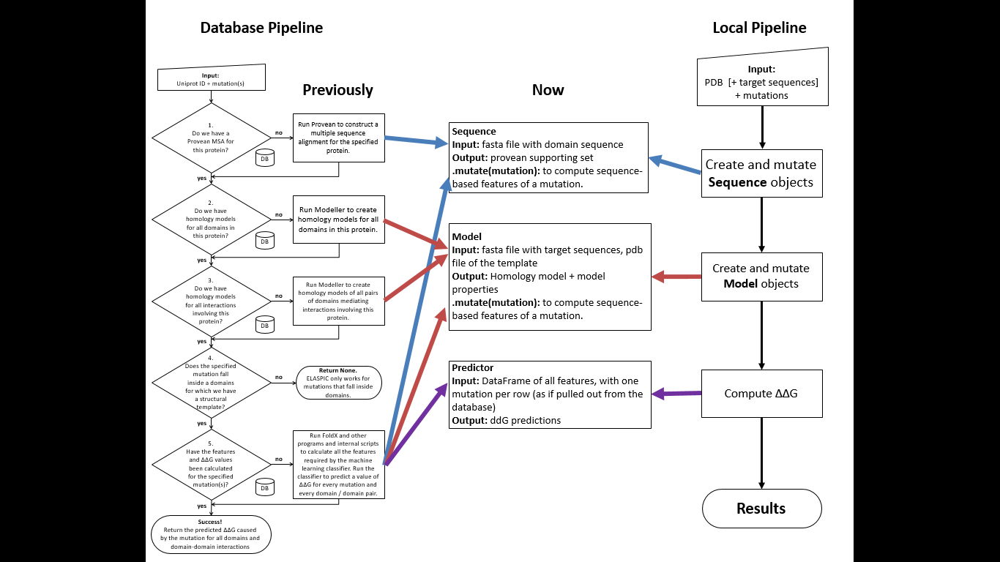
https://drive.google.com/open?id=0B1FXQpQb4bbTZzdoTDdLdFYtUDQ
Thesis
ELASPIC
(Predict the structural effect of mutations on a proteome-wide scale)
This was mainly an implementation, not original work…? (phrasing…)
Core
Training: Protherm
Validation: Taipale histone interaction data (but FoldX alone does better…) (Figure)
Interface
Training: Skempi
Validation: ? (Taipale luciferase protein complementation data was not good) (Figure)
Database schema
Cron job that updates downloadable database dumps every month.
Statistics
Number of proteins / PPIs that we were able to calculate.
Mutations: Uniprot disease vs. polymorphism, COSMIC driver vs. passenger, Clinvar, GWAS
Training / Variable elimination
Drug combinations
If we include the DREAM challenge, can present it as an application of the pipeline? Mapping mutations to the PPI network in order to predict the susceptibility of different cell lines to different drug combinations.
Design of the predictor
(Mention Alex K.’s validation)
Dream Challenge (Validation)?
Next weeks
- Finish the LocalPipeline / DatabasePipeline classes, and update jobsubmitter scripts on beagle so that the webserver can submit jobs with the updated pipeline (including raw PDB structures as input).
- Create a PPI network for different cell lines, based on their mutations (already scored all missense mutations with ELASPIC) and gene expression levels (keep the threshold used, and possibly try changing it later in cross-validation to see if we can improve results).
- Calculate network properties for each cell line network.
- Train 6 predictors:
- Regressors predicting the change in synergy score between two cell lines, using drug + target or target only features.
- Regressors predicting the change in synergy score between two cell lines, using drug + target or target only features but no gene expression data.
- Classifier predicting presence / absence of synergy, using drug + target or target only features. Combine with Clare’s training set (using weight < 1)?
- Many other data sources can be used:
- LINCS: a lot of drug ⇒ gene expression perturbation profiles. Targets with similar perturbation profiles are likely to be synergistic.
- Data from previous challenges
- Pathway data
- Similarity of drug monotherapy responses from other sources.
Reviewer: 1
Comments to the Author
This manuscript presents the ELASPIC web server which can be used to predict and analyze the effect of mutations on protein domains and domain-domain interactions. This topic is of great importance. The web server is functional and very user-friendly (I particularly appreciated the available help, downloads and software, and all the available options including an HTML5 alternative to Java-based visualization).
However, as detailed below, some important results are missing (especially about the "improved structural domain definitions" that were not used in the original ELASPIC paper), some aspects of the manuscript could be improved and some additional information could be added to the web interface to make it even more useful.
Major comments
1. There are already some web servers that allow users to predict the effect of mutations and that use homology modelling, for instance HOPE (Venselaar et al, BMC Bioinformatics 2010) or SNPeffect (De Baets et al, Nucleic Acids Res 2012). The authors should include those in their introduction/references and briefly discuss in what way ELASPIC is different from them.
OK.
HOPE
- Predicts the effect of mutations on protein CORE but not on PPIs.
- Do not predict ddG.
SNPeffect
2. The Profs pipeline seems to be a really crucial element in the version of the ELASPIC pipeline that is available through the web server. It is highlighted as such in the abstract and main paper. Profs is described in the supplementary material in terms of (detailed) methods, which is very useful; however no results are presented.
2a. Are there some validation results showing that Profs actually improves domain definitions over Pfam, as the abstract and paper say? I am aware that Profs is not the main subject of the present paper but since it seems so important to it, some evidence to support it would have its place in the supplementary material of the current manuscript, since the Profs pipeline in itself does not appear to have been published yet.
OK. Can include the plot I made comparing Profs, Pfam, and Gene3D. Link: https://drive.google.com/open?id=0B1FXQpQb4bbTMGlITVoyY2JvbjQ
Andres sent some case studies: https://drive.google.com/open?id=1Q-aL1WMDOAnv4iE4iLLSo5-ds0kQKhl_QbXNpwYkxyM
2b. Even more importantly, how does the use of Profs instead of Pfam domains affect the performance of ELASPIC? The original publication (Berliner et al PLoS One 2014) described the results of ELASPIC using Pfam domains only.
Original publication publication was using (Sebastian’s) PDBfam for homology modelled structures as well. The PDBfam (Profs) pipeline underwent majour development since then but the results should remain applicable.
Comparing ELASPIC performance using Pfam vs. Profs would be difficult… maybe we can just say that the longer domain definitions obtained with Profs are good enough reason to use Profs instead of Pfam?
3. It is very interesting that the web server provides a structural representation of the mutated protein/interface (as well as downloadable PDB files). However it seems that those structures are obtained by just replacing the side chain of the wt residue. For instance, the structure displayed in the main figure shows a covalent bond (<=3A) between the mutated W and the neighboring F. I view this as a sign that the structure/interface has not been relaxed/optimized after the mutation has been performed. Could the authors provide some more details about this? For instance how is the rotamer picked? Would it be possible to perform a minimum amount of relaxation so that the structure containing the mutated residue is more realistic?
We rely on FoldX to optimize the structure, and it optimizes the wild type and mutant structure in the same way... Quote:
This command ensures that whenever you are mutating a protein you always move the same neighbours in the WT and in the mutant producing for each mutant a corresponding PDB for its WT (each mutation will move different neighbours and therefore you need different WT references).
+ good suggestion but not relevant for a webserver paper, and can be implemented after the paper is accepted :).
Can add this information to the supplemental material?
4. Still regarding the web server, it would be most useful if there were some clear indications of whether a PDB structure was used or a homology model was built
- which PDB structure was used (if applicable) or which template(s) for homology modelling
Daniel. This information is in the database and alignment downloads. Can add this field in the output.
- whether the mutation is present in another database (COSMIC, etc.)
A bit more difficult. Add another field in the mutation output page to Ensembl / COSMIC / Clinvar / Uniprot?
(May need to create a new table in the database if the queries are slow).
- Uniprot humsavar.txt (~70k mutations) -> SwissVar (and OMIM) -> dbSNP / Ensembl
- Uniparc -> Ensembl db (> 2 million mutations) -> dbSNP / COSMIC / Ensembl website
- I am assuming the mutations highlighted on the sequence representation that appears when you enter an input name are those that were retrieved from SNP/SNV databases, but could not verify this and find out exactly which database each mutation belongs to. A link to a description of the mutation in the relevant database would be even better.
Maybe Daniel has some suggestions… If we implement the above request it shouldn’t be difficult.
Minor comments
- Especially for pre-calculated mutations (such as the R2088W in EP300 described in the main figure), why are there several result lines showing very similar results? In the case of R2088W, the mutation has 5 result lines annotated as "interface with NCOA3" and almost (but not 100%) identical values.
This is the splice variant issue…
- Can remove interactions between non-canonical uniprots, but then external identifiers (e.g. Ensembl) will often not have any interactions (as they map to splice variants).
- Maybe just display the uniprot id with the splice variant indicated by -1, -2, -3?
- Daniel: fix “Interface w/ HGNCIdentifier object”...
- In the methods, there are many tools or data sources that are cited without a reference: HGNC, OMIM, COSMIC, etc.
Will do. Left this out because we ran out of space.
- In section 2.3 I am not sure what is meant by "impact scores". Is it something more than the predicted deltadeltaG?
No, it’s just ddG (for now). Will change.
- In legend of Figure 1: severally -> severely.
Thanks. Will change.
- In section 3.2, the sentence "We applied our approach to a list of somatic mutations found in cancer" somehow leads to the expectation that the results for this list would be available somewhere and discussed (regarding availability, I assume this list is among the available downloads - pointing to the exact location would be most helpful).
Will make ddG predictions Ensembl / COSMIC / Clinvar / Uniprot available for download?
- The discussion in the supplementary material is actually not much more "in-depth" than the discussion in section 3.2. Maybe some extra figures describing the other interfaces and/or the representation of the associated interaction network would help in this regard.
Daniel.
Reviewer: 2
Comments to the Author
The authors designed a webserver that predicts mutation effects on protein stability and binding affinity. Given a protein sequence (Uniprot ID), domains are identified. For each domain, homology models are built. And homology models for all interactions involving this protein are also built. The structural features together with other features are used by a machine learning predictor to predict binding affinity for every mutation.
The user interface is very friendly and nicely designed. Users are allowed to specify mutations by either clicking on the protein figure or by choosing from the drop-down menu. Batch processing mode is also available. The results are clear and informative. The Help page is also informative.
I have, however, four comments:
1) It would be nice to offer the possibility to give a PDB entry rather than a UNIPROT code.
Have to either train another predictor using raw structures, or create some hack where the structures still go through MODELLER? (The latter is probably better, since maintaining several predictors is a mess and passing a structure through MODELLER does not change much and is quick if the alignment is 100% identical).
2) It would be nice to allow for upload of structures. Allowing the uploading structures can skip the homology modeling step, and can provide more precise information to the machine learning predictor.
Daniel. If we decide to implement step 1) above.
3) Could not see how to target / define a mutation within the interface of a complex. It would be nice to show the interface (from the homology models) on the protein sequence figure, too.
Daniel. Difficult! Cytoscape PPI map at mutation input?
(ELASPIC already allows specifying a particular uniprot_domain_pair_id).
4) Figure 4 in the Suppl. Material provides critical details about the pipeline. Maybe consider putting it in the main text or on the web server.
No space…?
Reviewer: 3
Comments to the Author
The Applications Note describes the ELASPIC web-server that predicts the effect of mutations on protein folding and protein-protein interaction. The server is the first server that uses homology models to predict the effect of mutations on protein stability and binding affinity and hence, it is justified to present it to a wider audience. The web server has a simple and clean user interface, making the usage very easy for non-experts. The explanation and documentation are adequate. The performance of the pipeline has been demonstrated in a separate publication. The manuscript is well written, it cites related work, briefly describes the algorithms behind the server and shows a screenshot of the results page for a structural model of a case study. The web server works as described, however some minor points have to be addressed.
Minor:
1. Uploading of a file to the server is not working. Firefox displays the message: “File could not be uploaded - try again” . Chromium does not report any problems but no file is uploaded. This has to be fixed. It would also be beneficial if an example file is provided to the user.
Daniel.
2. If there are many previously run mutations, it is almost impossible to read the labels in the protein figure at the submit job web page due to the overlapping text. It would be nice if this information could also be presented in a table or similar format to the user.
Daniel. This is probably the most difficult.
3. The single mutation submit form allows the use to select the protein ID O00522 as an example input by clicking on it. However, the protein ID is not highlighted and can therefore easily be missed by the user.
Daniel.
----------------------------------------
Majour question:
- Is it OK if we pass all structures through Modeller (even if 100% sequence identity) as a way to “relax” the structure? Building and maintaining a second predictor that is based on raw PDBs would be a lot of work (and since the PDBs can vary so much from structure to structure, maybe using Modeller is a good way to prevent overfitting on particular idiosyncrasies of the training set?)
Splicing/Network, 2015-09-22
Dream Challenge Outline:
Challenge 1a: Predict synergy scores of drug pairs in particular cell lines, given, as training data, synergy scores of the same drug pairs in different cell lines.
- Provided with mutation / CNV / gene expression data for most cell lines.
Challenge 1b: Same as 1a, but without using gene expression data (only mutations / CNVs).
- Supposed to levarage interesting patterns that we notice in challenge 1a
Challenge 2: Predict synergy scores of drug pairs in particular cell lines, given, as training data, synergy scores of different drug pairs in different cell lines. (The most similar to Clare’s approach).
Final submission deadline extended until January… (~300 participants, biggest DREAM challenge ever)
Exploring the Dataset for Meaningful Features:
Synergy Scores
Correlation between synergy scores in different cell lines ~ 0.25.
Correlation between synergy scores in the same cell lines ~ 0.50 (as reported on the forums).
So this is probably the strongest feature for challenge 1 (but some pairs of cells may be consistently more correlated than others!)
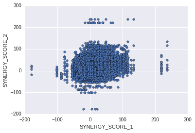
Features:
- Max Synergy Score from association network + confidence
- Mean Synergy Score from association network + confidence
- Weighted mean Synergy Score from association network + confidence
Correlation between monotherapy responses:
Monotherapy Scores
| ic50_2 | h_2 | e_inf_2 |
ic50_1 | 0.251497 | -0.046592 | -0.082847 |
h_1 | -0.046592 | 0.020994 | 0.044669 |
e_inf_1 | -0.082847 | 0.044669 | 0.138592 |
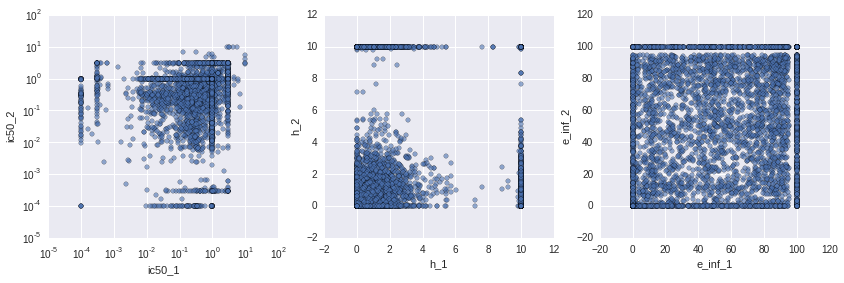
Cross-validation:
- Leave one drug pair / cell line out (as long as there is the same drug pair in different cell lines)
- Leave one drug pair out (all cell lines)
- Leave one drug pair out (all cell lines, and all drug pairs that contain either of the two drugs)
Splicing/Network, 2015-09-15
Make all mutations for P41250 variants…
Updated the ELASPIC virtual machine
- Run jobs on the beagle cluster instead of locally on the VM
- Transferred metadata for previously-completed jobs to the new VM.
- Fixed some Python 3 issues that haven’t been detected previously.
Mapped drop-off score vs. NormDOPE score, and HIPPIE (physical) and String (functional) interaction networks
- Peptides are unlikely to have high drop-off score when String edge betweenness is high.
- Next page...
DREAM Drug Combination Challenge
- Updating our PPI database
Updating the uniprot sequence and cross-reference database
- No easy way to update the 10+ GB uniprot identifier table other than to recreate it with the new data.
- Faster to recreate the table using new data then update it with missing entries
- Use uniparc, which cross-references sequences from different databases using the CRC64 hash of the sequence.
- Ideal for mapping mutations to / from Ensembl and NCBI because we know that the sequences are identical.
- The XML document contains a “last updated” field, which makes updating the database easy
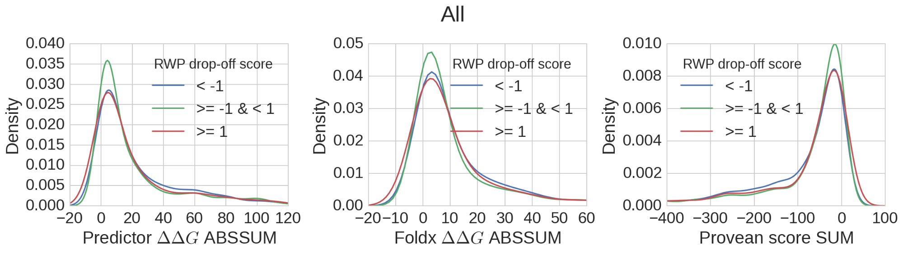
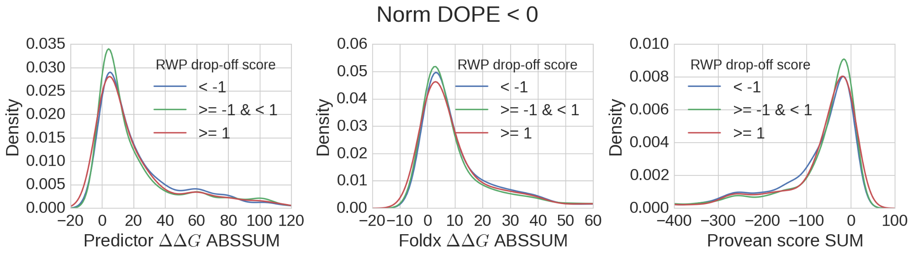
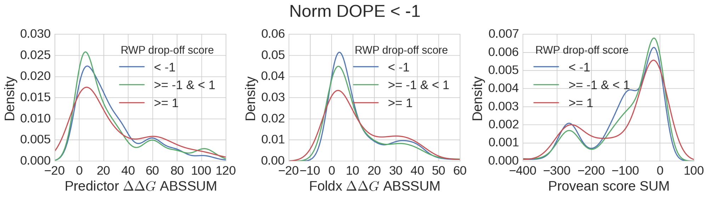
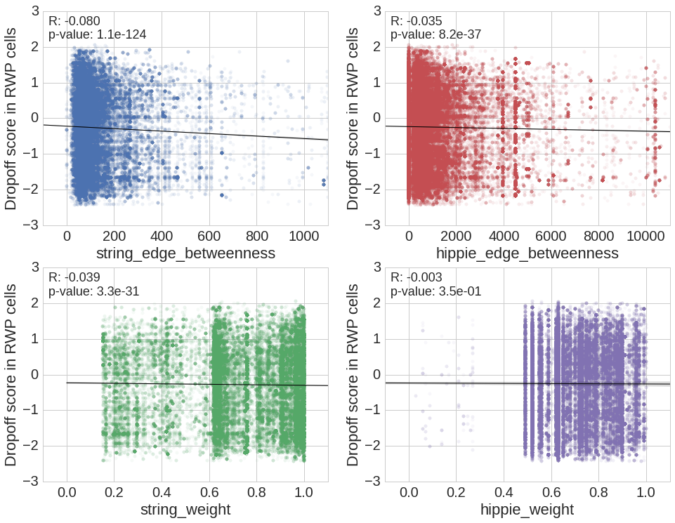
Correlation is weak but p-value is higher than Predictor / FoldX / Provean (e.g. Interface properties vs. drop-off score).
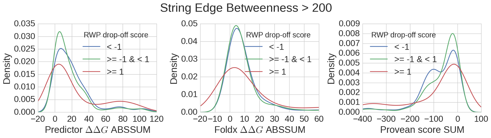
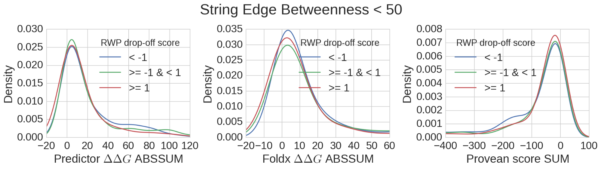
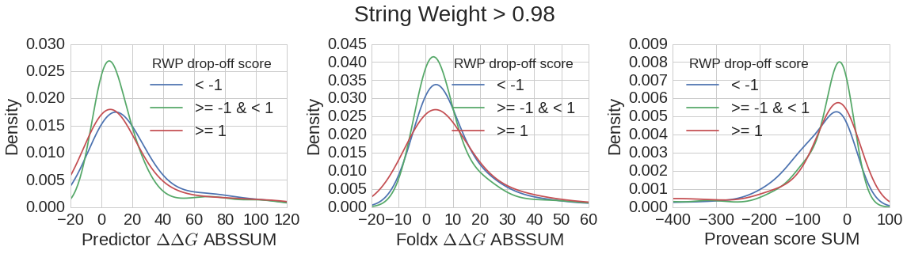
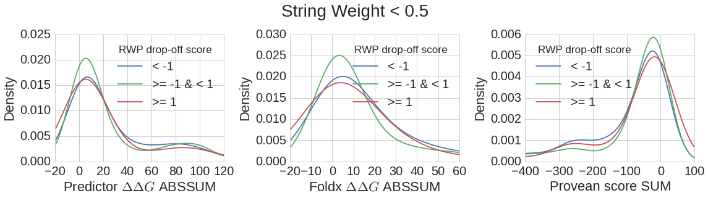
Splicing/Network, 2015-09-01
Progress
Jobsubmitter for the ELASPIC webserver
- Allow the webserver to submit jobs onto the cluster instead of having a limited amount of resources that most of the time are wasted and / or overwhelmed.
- This way people in the lab can use it too without overloading the virtual machine :).
- If a protein does not have precalculated provean supporting sets or structure, don’t start running provean and modeller for every submitted mutation in that protein!
- Create a lock for each provean and modeller job that is running. Release the lock once the alignment and structure have been calculated. (Mark’s suggestion).
- Provean and modeller can be running for the same protein at the same time.
Done. Just need some more testing and then I will swap it with the current ELASPIC virtual machine (or use a docker container…).
Nice-to-haves...
- Limit the load on the MySQL database by processing several mutations inside one job (using one query to the database). Maybe
Glycine--tRNA ligase (P41250)
Created a copy of the P41250 protein with only a single domain that we are interested in, with 2PMF as the structural template (it can be queried in the ELASPIC webserver as P41250-BCG101).
PDB 551-674; Uniprot: 607-728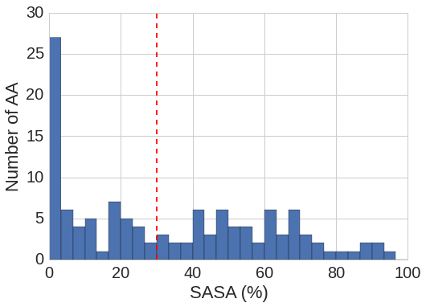
Created a histogram of SASA scores, and decided to use 30% SASA as a threshold for interface vs. core amino acids.
This gave me 60 residues. I mutated each of those residues to each of the 10 polar amino acids: http://elaspic.kimlab.org/result/518dd5/. <--
Carles manually inspected the structure and came up with some leads
Manual inspection of the structure
- MET16 [574] (628) http://elaspic.kimlab.org/result/836b78/
- PRO17 [575] (629) http://elaspic.kimlab.org/result/7ead46/
- VAL35 [593] (647) http://elaspic.kimlab.org/result/b67722/
- MET80 [638] (692) http://elaspic.kimlab.org/result/0ae75d/
- LEU113 [671] (725) http://elaspic.kimlab.org/result/889eeb/ (***)
- subs arginine by lysine
- http://elaspic.kimlab.org/result/227cd5/ (***)
Mutations to K/E/Q usually are predicted to be the least disruptive or even stabilizing…
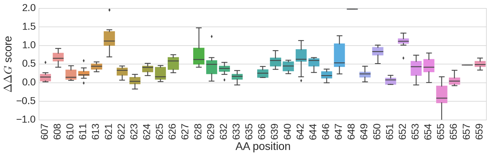
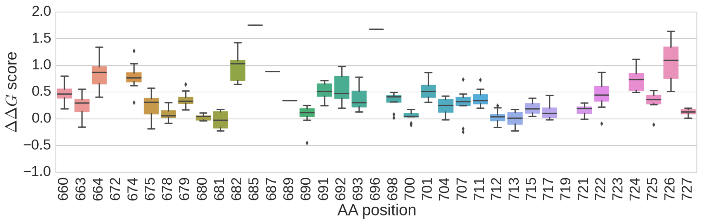
Select all amino acids with SASA scores > 30% and mutate them to 10 polar amino acids (DESTYQNKRH).
- Splicing/Network, 2015-08-25
Mapping the entire disorderome library to ELASPIC
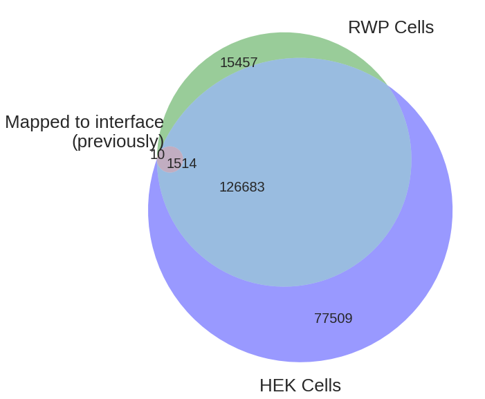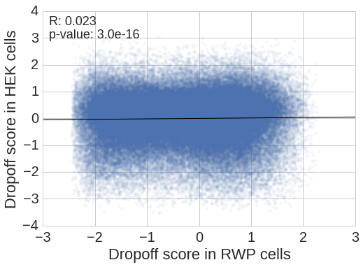
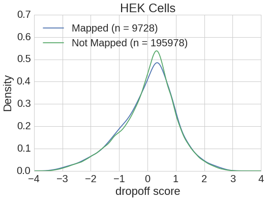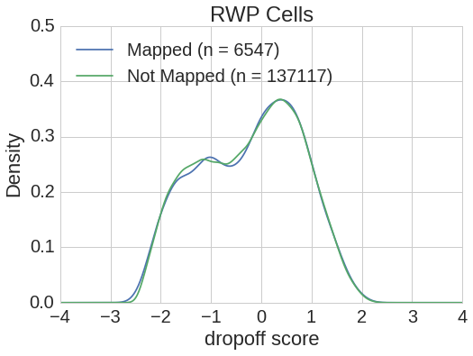
Mapping mutations to interfaces
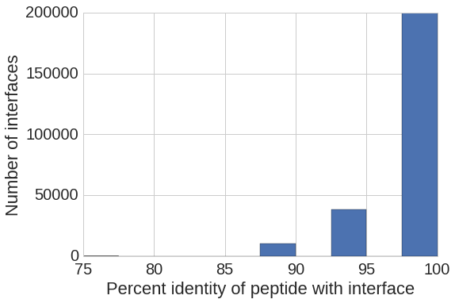
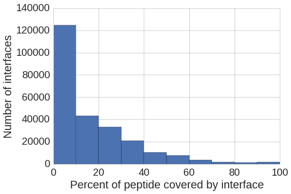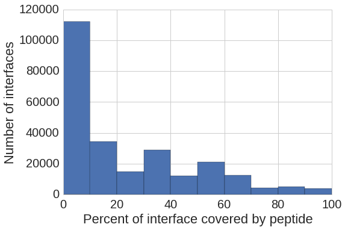
Correlation between dropoff score and interface features
| SCORE_rwp | SCORE_hek |
SCORE_rwp | 1 | 0.116051 |
SCORE_hek | 0.116051 | 1 |
uniprot_sequence_length | 0.02027 | -0.030715 |
match_pc | -0.086333 | -0.01859 |
pc_peptide_covered_by_interface | 0.009508 | -0.007789 |
pc_interface_covered_by_peptide | 0.002261 | -0.019852 |
norm_dope | 0.024184 | 0.035112 |
interface_area_hydrophobic | -0.053904 | -0.021387 |
interface_area_hydrophilic | -0.030405 | -0.020782 |
interface_area_total | -0.048425 | -0.021678 |
predictor_ddg_sum | -0.062794 | -0.021631 |
foldx_ddg_sum | -0.066751 | -0.018237 |
provean_score_sum | 0.069049 | 0.020643 |
predictor_ddg_abssum | -0.064016 | -0.021777 |
foldx_ddg_abssum | -0.063576 | -0.024342 |
provean_score_abssum | -0.069092 | -0.020856 |
predictor_ddg_mean | -0.00322 | -0.000505 |
foldx_ddg_mean | -0.030116 | -0.013136 |
provean_score_mean | 0.002456 | -0.014325 |
predictor_ddg_min | 0.031324 | 0.021758 |
foldx_ddg_min | 0.026806 | 0.016937 |
provean_score_min | 0.039117 | 0.005405 |
predictor_ddg_max | -0.022403 | -0.015544 |
foldx_ddg_max | -0.057418 | -0.021062 |
provean_score_max | -0.040273 | -0.01125 |
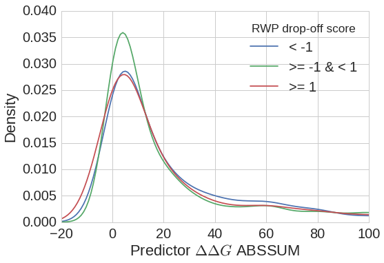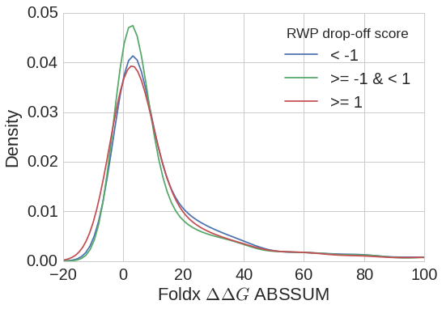
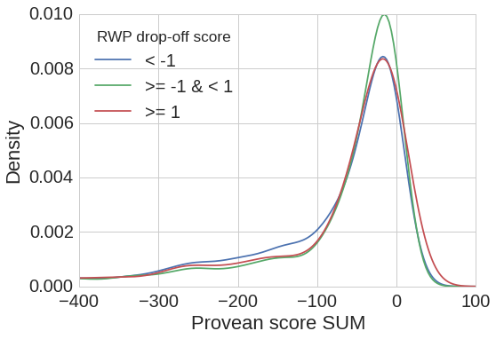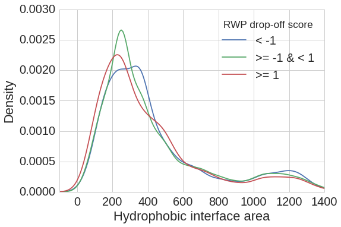
Splicing/Network, 2015-08-18
Progress:
- We are still missing 170,000 interface mutations (~17% of all interface mutations)
- Looking at the failed examples, many of those mutations fail because the 7zip archives are outdated
- Updated the 7zip archvies on the elaspic downloads page (were .tar.gz before)
- Finally compiled graph-tool
- Was figuring out how to run virtual machines on the webserver
- I was using VirtualBox + Vagrant on my desktop, but the webserver uses Xen Server (more performant)
- Converting VirtualBox -> Xen images and figuring out how xen works
Subgroup Splicing/Network, 2015-08-11
Taipale Y2H protein-protein interaction dataset:
Mapping mutations to uniprot
Number of unique mutations (starting point): 527
Number of unique mutations (after mapping to uniprot): 657
Number of mutated proteins: 285
Number of unique interfaces (after mapping to uniprot): 2197
Run Profs (PDBfam) on the new interfaces to find structural templates
Number of unique interface / mutation combinations
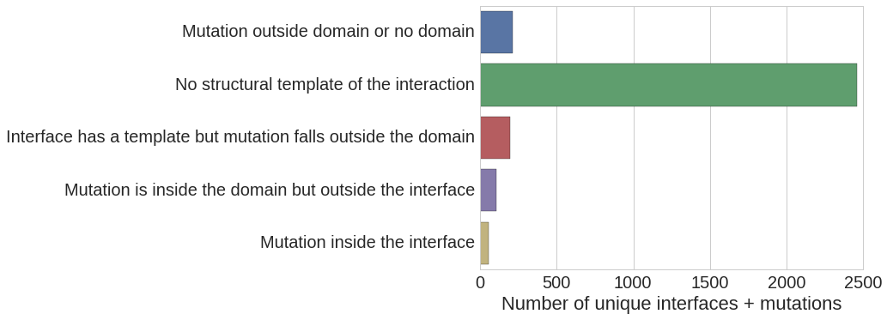
Taking the best interface for each mutation
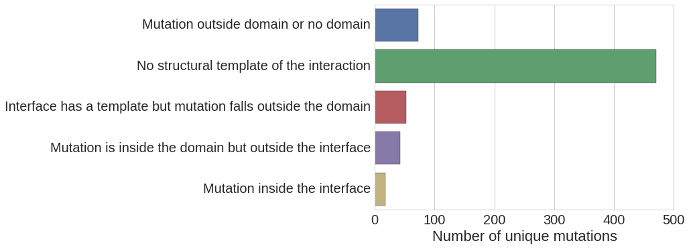
GPCA: Gaussia princeps luciferase protein complementation assay
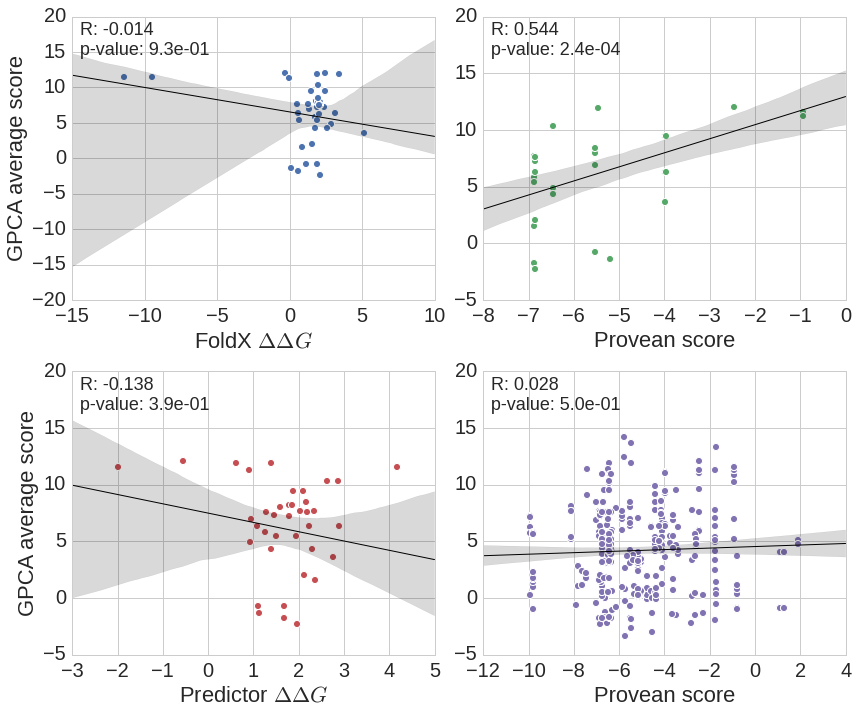
The only ok feature is Provean, but even that disappears when look at all interface mutations and not just those for which we could build a structural model.
Looking at the change in GPCA scores between wildtype and mutant isn’t much different....
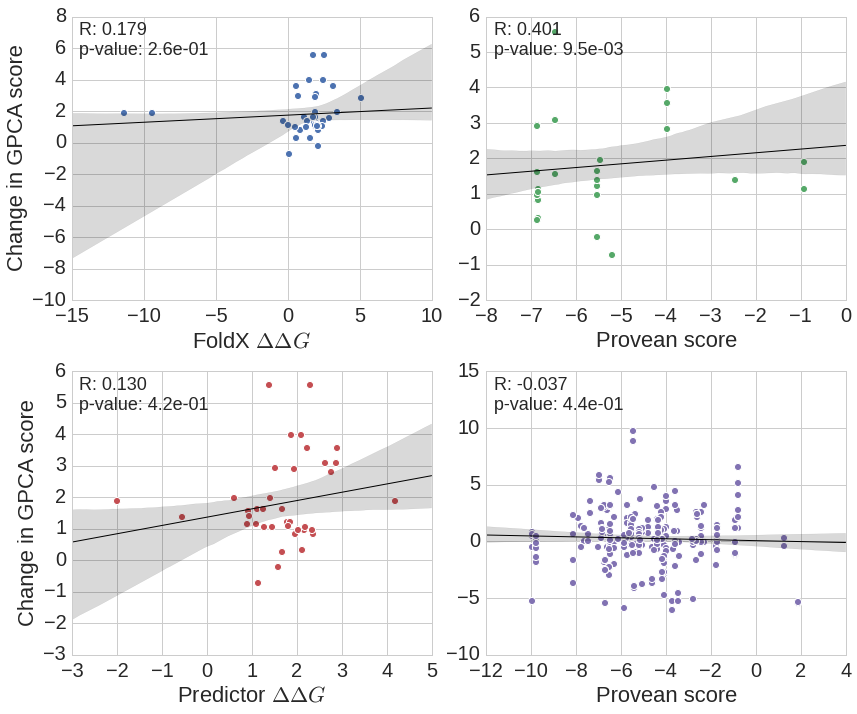
Looking at patterns in the loss or gain of interactions wasn’t much better...
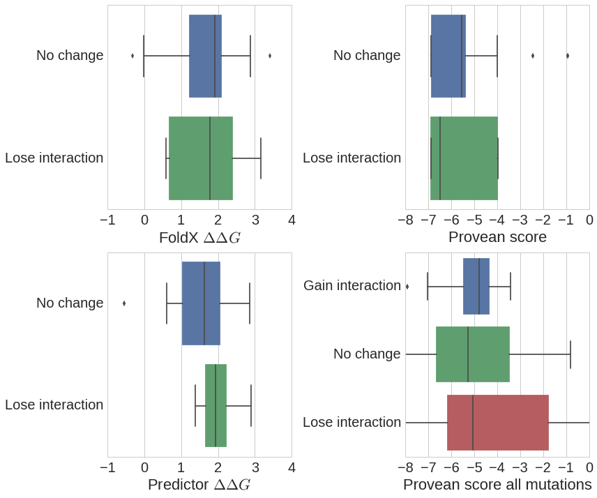
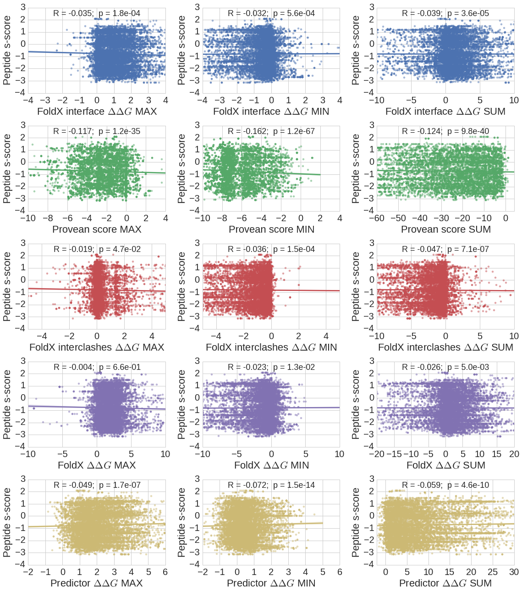
Subgroup Splicing/Network, 2015-08-05
Documentation and Wiki
username: kimguest
password: 630kim630
Created two shared folders:
- Lab members can copy their static html files here if they want to make them accessible to other people in the lab.
- A django wiki for editing documentation interactively.
- Files organised in a hierarchical folder structure
- Attachments also in a hierarchical folder structure, followed by “attachment”
- Getting everything to work required a pull request to waliki:
Can use either method depending on preference (plus the http://kimlab.org wiki for critical info)
There was a lot of headache setting up a folder that by default has write permissions for every person in the kimlab group. In NFSv4, the umask takes precedence over ACL permissions, so you have to mount kimlab with NFSv3 to get the shared folders to work: http://marc.info/?t=123739823200003&r=1&w=2.
Remounted the ELASPIC archive folder (holding all the pdb files) with NFSv3, so the permissions are by default rwX for user and group for all structures computed by the webserver (before we were setting umask with each call, but it was still not working consistently).
Updated ELASPIC Webserver
Introduced a hack into the call to celery to make the webserver work with the updated pipeline:
Plan
- No more webserver / documentation stuff!!!
- Alanine scanning vs. dropoff score
- Drug combinations challenge (has not started yet…)
- Thesis
Subgroup Splicing/Network, 2015-07-15
Set up local Django servers:
- Waiting for an issue with celery to be resolved before upgrading the server
- Fix an error in a web-server css stylesheet which led to bad display in Firefox:
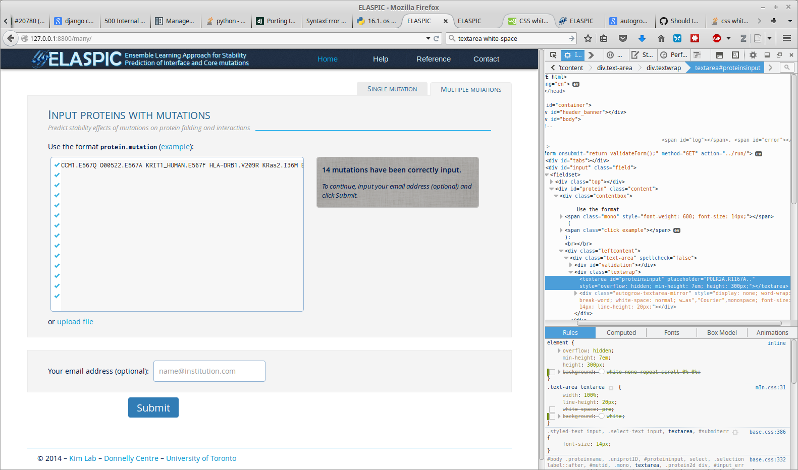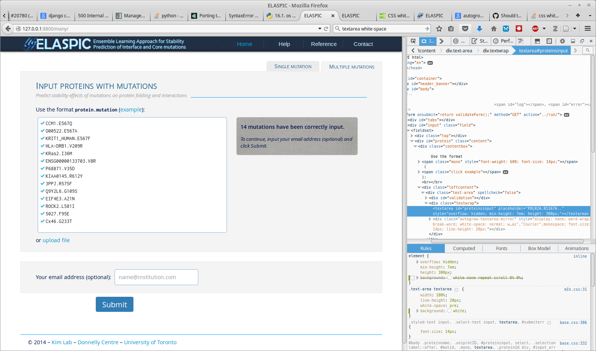
- Lical wiki: http://192.168.6.167:8201
- Disorderome peptides vs. ΔΔG and Provean score (next page)
- ΔΔG and Provean score vs. Histone interaction data
- working on the interaction (Y2H) data now...
Interface properties vs. drop-off score
No correlation between FoldX ΔΔG and peptide z-score
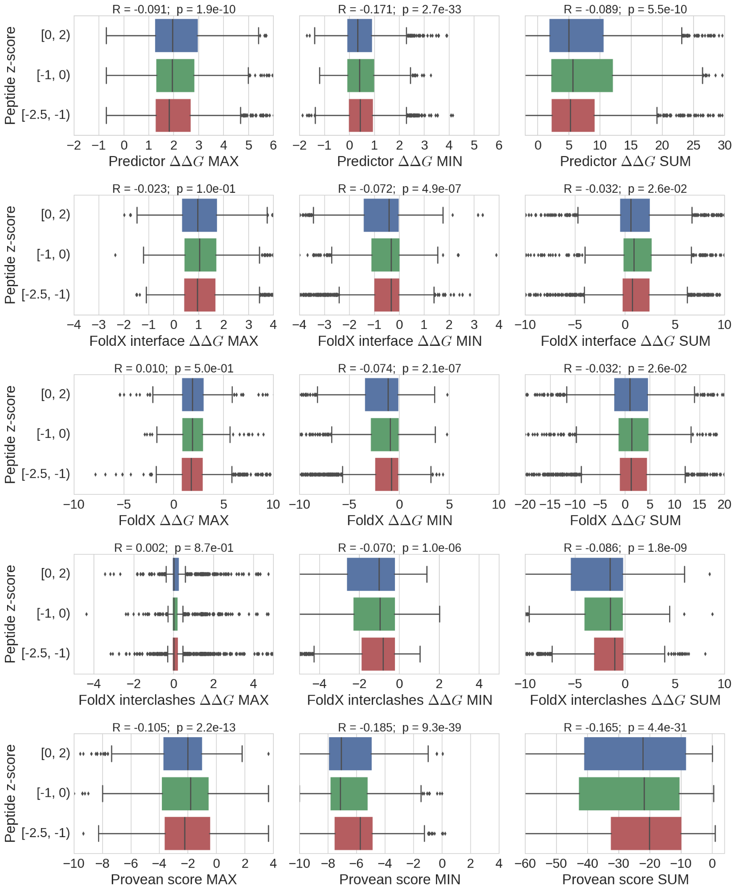
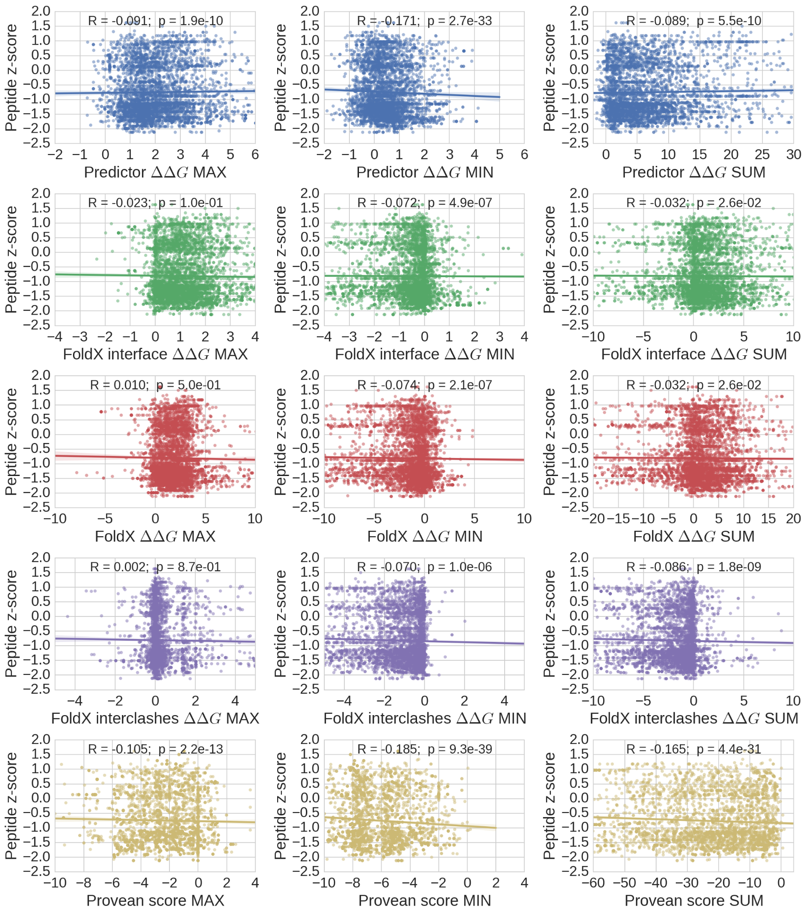
Some correlation between predictor ΔΔG and peptide z-score
(but it’s mostly due to Provean)
ELASPIC features vs. Histone interaction data (CORE)
number of unique uniprots / mutations: 2,963
number of unique mutations inside domains: 2,009
number of unique mutations with ddg scores: 1,855
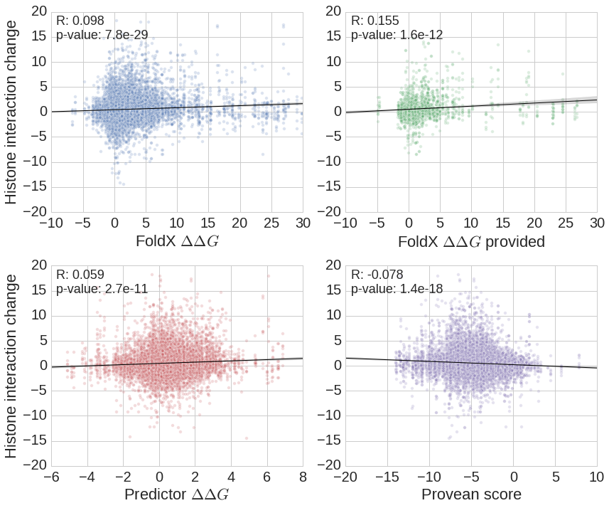
Our FoldX scores make sense...
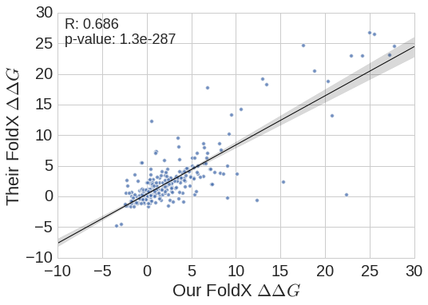
Histone interaction data is predictive of disease...
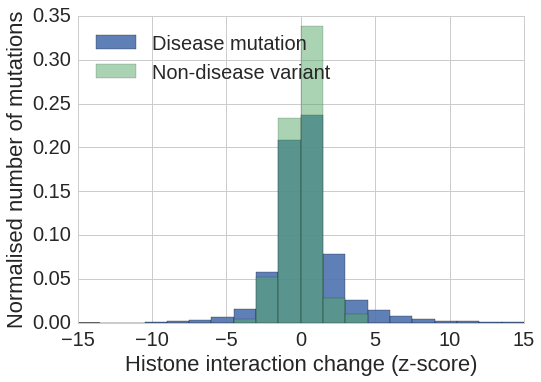
Subgroup Splicing/Network, 2015-07-09
Progress
- Lab meeting
- 70% of alanine scanning
- Looking at overlap between ClinVar mutations from ClinVar and Ensembl databases
To do:
- Scores for ALL disorderome peptides
- Thesis
- Dream Challenge
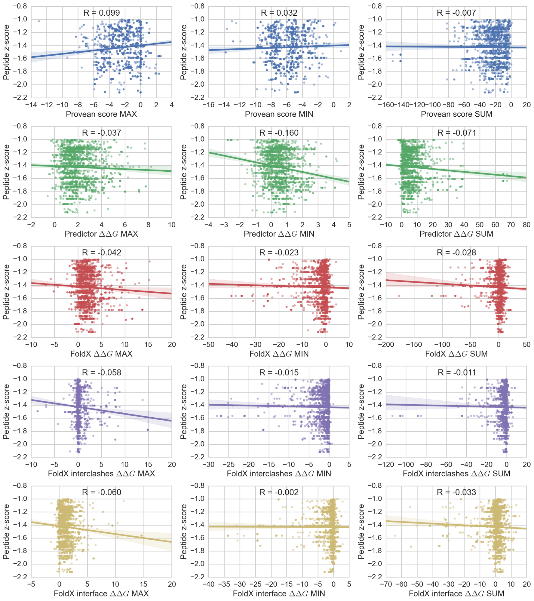
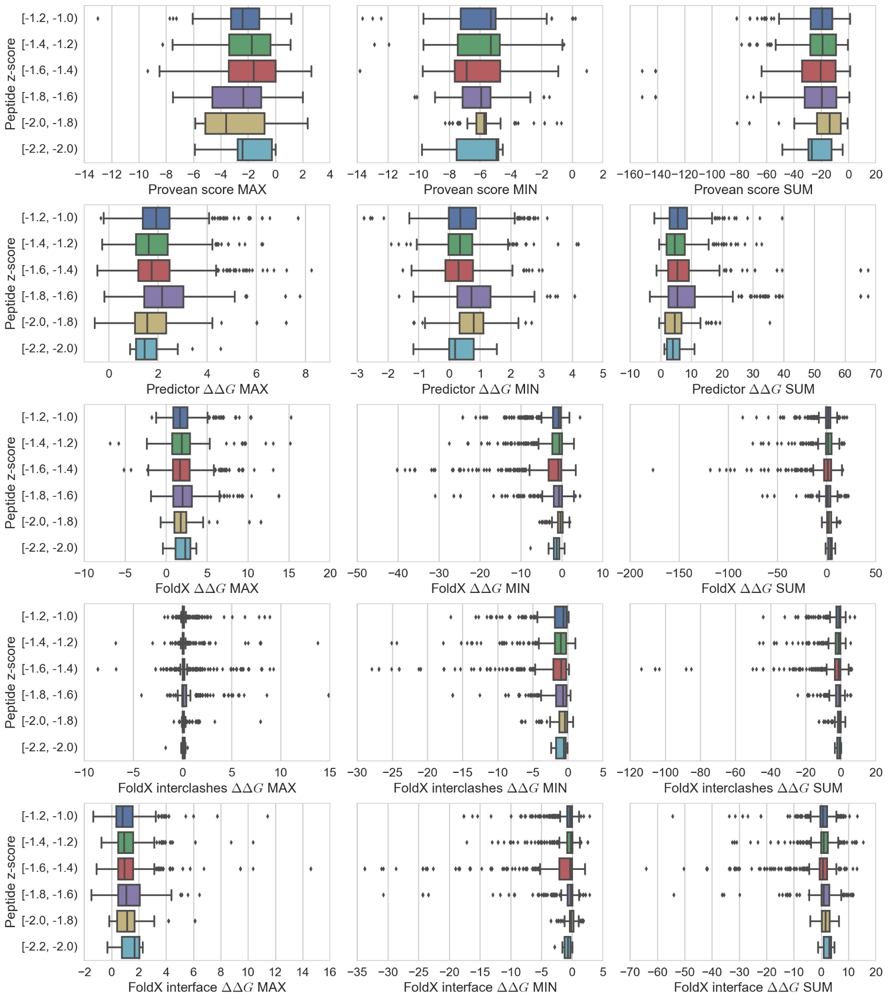
Subgroup Splicing/Network, 2015-06-24
Revised drafts for the paper are in the webserver subfolder
Drug combination prediction challenge: https://www.synapse.org/#!Synapse:syn4231880/wiki/
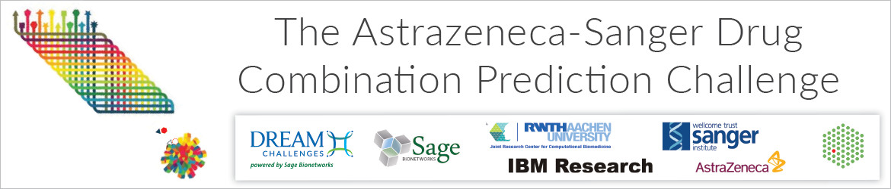
Registration Open: 25 June 2015
Launch: July 2015 (Exact date to be announced)
Close: September 2015 (Exact date to be announced)
As the basis of the Challenge, AstraZeneca is releasing ~30k experimentally tested drug combinations measuring cell viability over 140 drugs and 120 cancer cell lines (primarily colon, lung, and breast), and monotherapy drug response data for each drug and cell line. Moreover, in coordination with the Genomics of Drug Sensitivity in Cancer and COSMIC teams at the Sanger Institute, genomic data including gene expression, somatic mutation, copy-number alterations, and methylation data will be released into the public domain and made accessible for Challenge participants through the Challenge data repository.
Subgroup Splicing/Network, 2015-06-17
Provean vs. peptide z-score
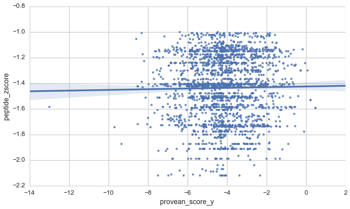
FoldX vs. peptide z-score
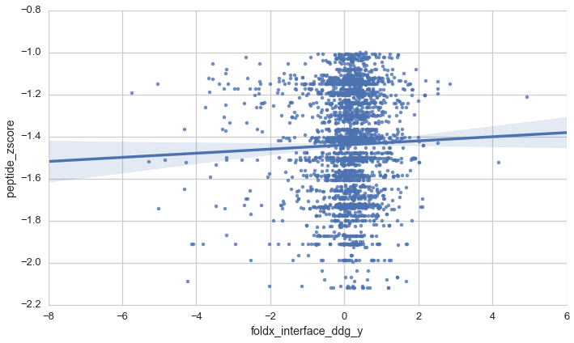
Metapredictor vs. peptide z-score
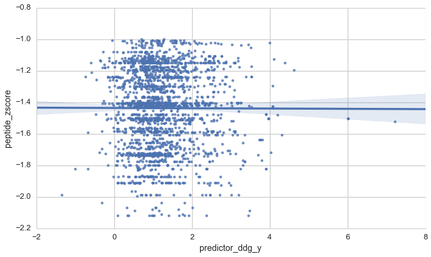
Alanine scanning of all human PPIs
- The structure archive is > 1 million files, so even without any calculations it breaks scinet.
- Can’t use tar because takes a long time to decode single files
- Trying p7zip… seems to work ok
Documentation for the lab
Subgroup Splicing/Network, 2015-06-10
Disorderome
- All done, but haven’t done analysis yet.
- Transferring data back to kimstg
- Divide tar into many small files -> works much better. I guess scinet dev nodes terminate long-running processes, so you have to split up all your tasks into smaller chunks.
Alanine scanning of human uniprot
- Running on Scinet and Guillimin
Ensembl mutations
- Running on Beagle and Banting
Making PBS / SGE scripts
Beagle and Banting
- Mark noticed that my jobs were not maxing out the CPU
- Turns out when I submit jobs on both beagle and banting with one job per mutation, the database can’t keep up with the queries and becomes the limiting factor
- Wrote a SGE script that runs mutations in chunks using a separate SQLite database per node. This is using all the resources.
Scinet
- Overshot the 1 million files mark.
- Modifying code to keep the old and new files separate, so that I can easily compress all the new files into a single tar.
Guillimin
- Got an email saying that I am maxing out the /tmp folder on some nodes.
MP2
Subgroup Splicing/Network, 2015-05-27
- 78,058 mutations calculated, 17,760 remaining (19%, same as last week)
- submitting jobs now (modified ELASPIC so that I don’t recalculate domain pairs that have already been calculated)
- need a good way to transfer files back (Globus times out and tar-ing everything takes hours and I exceed time limit on dev nodes)
- will probably create a set of files containing the filenames of everything that has to be transferred back
Disease mutations from different sources (restricted to only those mutations that fall inside domains)
variation_set_id | name | description | number of proteins |
9 | All phenotype-associated variants | Variants that have been associated with a phen... | 0 |
10 | OMIM phenotype variants | Variations linked to entries in the Online Men... | 2494 |
11 | Uniprot phenotype variants | Variations with phenotype annotations provided... | 1195 |
12 | NHGRI catalog phenotype variants | Variants associated with phenotype data from t... | 269 |
13 | PhenCode | Variants from the PhenCode Project | 634 |
17 | COSMIC phenotype variants | Phenotype annotations of somatic mutations fou... | 31003 |
18 | HGMD-PUBLIC variants | Variants annotated by HGMD | 0 |
62 | All ClinVar | Variants with ClinVar annotation | 7493 |
64 | clinically associated | Variants described by ClinVar as being probabl.. | 3553 |
Subgroup Splicing/Network, 2015-05-20
- 78,058 mutations calculated, 17,760 remaining (19%)
- 10 to 20 domain mutations per hour per node
- Add option to evaluate mutation in a specific domain (or domain-domain pair) rather than uniprot
- End up calculating duplicates if mutations has been evaluated for one domain but not another
- Getting strange errors copying data back; need to email scinet about it
- ELASPIC (rerunning for all missing domains (<200) and domain-domain interactions (~2000)
- POPS was failing when there were steric clashes in the model, making the whole pipeline crash
- Replaced POPS values with NaNs in those cases
- Biopython is crashing for some PDB structures
- Need to do something about combinatorial explosion of domain-domain interactions in some cases
Subgroup Splicing/Network, 2015-05-15
News
- Daniel says he was too busy to write the cover letter. Hopefully this week… (not really my job…)
- Compiled all ELASPIC dependencies on a CentOS 5.11 virtual machine using conda, and uploaded the binaries to binstar (https://binstar.org/ostrokach).
- Anyone can now install ELASPIC by running: `conda install elaspic`, and setting a MODELLER_LICENSE environmental variable.
- Tested this on SciNet and it works.
- Some clusters run very old versions of linux, and these binaries should still work without recompiling...
- If I can set up a Mac virtual machine, should be possible to compile this to work on a Mac (so Michael does not have to compile all the stuff himself).
- Sent the new instructions and a link to modelled domain-domain interactions to Michael Dong…
- But this might not have been what he was looking for? I mistakenly thought he was from Regis Pommes’ lab, not Nicholoas Provart… Was he looking for raw pdb structures?
- 10794 out of 59288 alanine scanning mutations done
- Still have to see whether the jobs simply timed out or if there’s something wrong with how I made this alanine scanning set.
- I think the 10 k jobs finished overnight, so pretty quick..
- Do alanine scanning for everything or just the disorderome?
Summary of all previous to-dos
- Bug in ELASPIC when the structural template contains phosphorylated residues
- Carles found CHARMM phosphoserine and phosphotyrosine force fields (patches...) that I will try adding to modeller.
- Remove the phosphate group and add it later if necessary using FoldX?
- Treat phosphorylated residues as BLK residues (need to alter a bit the alignment pipeline)?
- There are likely other bugs as well. About 1 thousand domains and few thousand domain pairs don’t have models because of bad templates but also other errors.
- Add more specificity in the error messages, storing errors that are OK so I don’t have to rerun.
- For domain pairs, some have a combinatorial explosion. Have to think of a way to fix this.
- Revisit the training set, particularly the interaction training set, and put the figures in the thesis and online documentation.
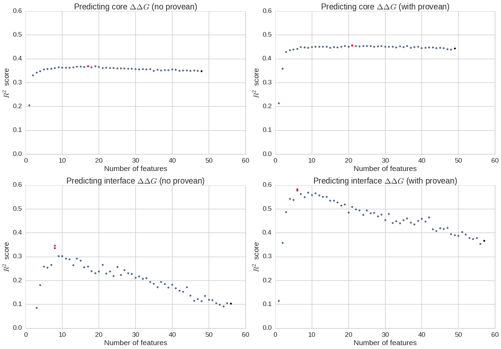
- Analysing disease mutations
- Create a new COSMIC driver / passenger dataset with proteins divided based on mutation density instead of mutation than count. Can keep the old Uniprot disease / polymorphism dataset.
- ∆∆G predictions vs. Provean
- ∆∆G predictions vs. Disease (high negative, mid negative, neutral, mid positive, high positive)
- (-0.5 < ddG < 0.5 for neutral)
- Presumably ∆∆G predictions should be particularly useful for interface mutations, since surface amino acids are much less conserved. Interface mutations are also over-represented in disease.
- Train an interface yes / no classifier using yeast two hybrid studies and other data.
- Alter the webserver so that it can submit jobs to beagle rather than running them locally?
Thesis topics (2015-05-16)
- “Majority of missense disease mutants do not dramatically impact protein structure or folding”
- “we obtained interaction profiles for 460 mutant proteins and their 220 WT counterparts and found 521 perturbed interactions out of 1,316 PPIs.”
- “mutations perturbing PPIs are preferentially located within structural domains”
- Output: Predict all interaction-perturbing mutations in OMIM / COSMIC / ClinVar… (just a probability instead of ddG, but way more training data…)
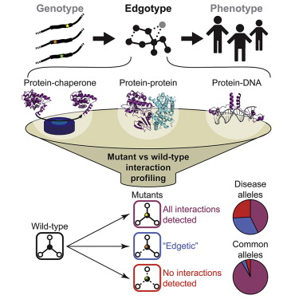
- Collect more mutation data
- I didn’t get many results when I tried this previously, but I was just querying Pubmed and google with simple keywords.
- Uniprot sometimes annotates mutations with ddG effects (e.g. Strongly decreased DLD binding). Could also mine Pubmed titles and abstracts downloaded by Alex. Often a mutation results in “no detectable binding”, but maybe we could still use this?..
- Look up other methods that people use to calculate ddG (ELISA, TI, chaperone binding?). Can simplify it into a classification problem.
- Use Omnia and ForceBalancer to train our own forcefield and use it instead of FoldX. This way we could correctly cross-validate our method, and compare it to the rosetta benchmark. Also, FoldX is closed source, and the authors can complain about us using it in a webserver (same with modeller, but no way to change that…).
- Each domain should be annotated with a PSI-BLAST(hmmscan / jackhmmer) multiple sequence alignment
- Measure conservation / covariation of residues that are in close proximity to the mutated amino acid.
- Measure covariation between surface amino acids on different chains (using CCMpred, which can calculate the pseudo-likelihood measure).
Subgroup Splicing/Network, 2015-05-15
disorderome:
3756 domain pairs
3013 uniprot pairs
1224 uniprot pairs where all splice variants that have a corresponding canonical version have been removed
59288 mutations
Talked to Michael about testing out elaspic.
Subgroup Splicing/Network, 2015-05-15
Progress
- Daniel was busy last week and had a presentation on Monday. He said he’ll changing the figure in the manuscript and add more detail about to the case study ASAP.
- Good to go. Just need more detail about the case study.
- Description of every column in every table added to the documentation.
- (still need to proof-read this though)
- Should I add this to the supplemental.
Backing up external files
- Compressing all external files generates archives that are too large
- We don’t need to provide FoldX wildtype and mutant structures.
- We don’t need to provide pickled backup of the information for each model and mutation.
- Couldn’t find an easy way to compress a subset of the files in our folder structure
- We want to include files in:
- human/up/up/up/*
- human/up/up/up/dom/*
- human/up/up/up/dom/dom/*
but not in any other directory .
- Before was using: tar czf human_structures.tar.gz human
- Using: tar czf human_structures.tar.gz human/up/up/up/* and similar variants generates an error saying argument list too large.
- Same error when using the --exclude option.
Alanine scanning of interface mutations
- We have 373,361 mutations in 6,296 proteins
- Have templates for another ~1,200 proteins, so could extend this dataset in the future…
- Many more templates for splice variants and a few more for TrEMBL.
- Have models and provean supporting sets for all of these proteins
- Should pre-calculate Provean scores before sending in to SciNet...
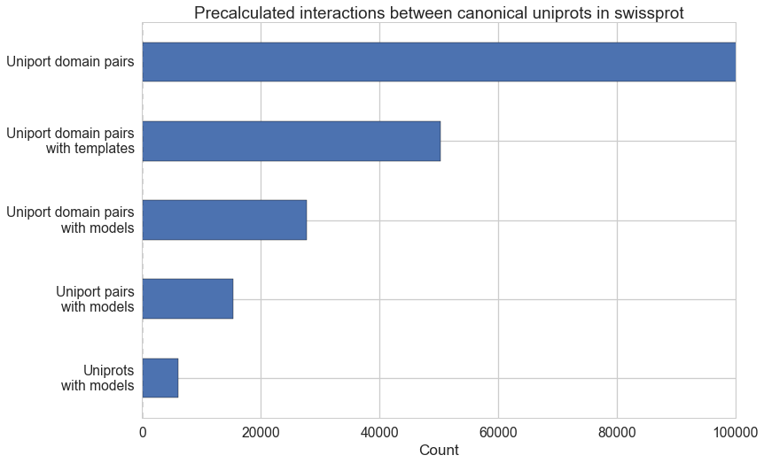
Subgroup Splicing/Network, 2015-05-08
Progress:
- I think it's good. My only concern is that the case study at the end may be a bit vague, so it might be good to add more detail about it in the supplemental. Daniel said he’ll look into it today. I’ll fill in the details that require calculating mutations, etc.
- Supplemental: pdf, docx
- Added explicit links to bitbucket and readthedocs on the ELASPIC website.
- Bug in ELASPIC when the structural template contains phosphorylated residues
- Carles found CHARMM phosphoserine and phosphotyrosine force fields (patches...) that I will try adding to modeller.
- Remove the phosphate group and add it later if necessary using FoldX?
- Treat phosphorylated residues as BLK residues (need to alter a bit the alignment pipeline)?
Subgroup Splicing/Network, 2015-04-01
- Daniel selected a test case for the paper
- Guess I’ll spend the tomorrow (and Friday) in the library.
Subgroup Splicing/Network, 2015-03-25
Webserver paper:
- Daniel wants to submit the paper to Bioinformatics Applications Note (Draft)
- We need an example to put in the paper...
Previous to-dos:
- Create a script that saves all required ELASPIC tables from the database to text files:
- Create a script that can create all the required ELASPIC tables and fill them with data from text files:
- Moved database username and password from the source code into an encrypted configuration file.
- Made it possible to specify the database type from within the configuration file.
- Added test cases that create a MySQL, PostgreSQL, or SQLite database, uploads to it a small subset of the data, and calculate a core and an interface mutation.
- Can now run ELASPIC on Scinet?
- Update documentation to include the ELASPIC database schema:
To do...
Analysing disease mutations (still to do):
- ∆∆G predictions vs. Protherm
- ∆∆G predictions vs. Disease (high negative, mid negative, neutral, mid positive, high positive)
- (-0.5 < ddG < 0.5 for neutral OK?)
Subgroup Splicing/Network, 2015-03-11
ELASPIC:
- Add final classifiers to the source code (done)
- Fix python 2 / 3 compatibility issues (done)
- Write the manuscript (in progress)
- Update documentation to include the ELASPIC database schema
- Create a script that saves all required ELASPIC tables from the database to a text file
- Create script that can create all the required ELASPIC tables and fill them with data from text files
Analysing disease mutations (still to do):
- ∆∆G predictions vs. Protherm
- ∆∆G predictions vs. Disease (high negative, mid negative, neutral, mid positive, high positive)
- (-0.5 < ddG < 0.5 for neutral OK?)
SciNet:
- You must enter the Compute Canada Role Identifier (CCRI) of your sponsor or supervisor. They will be asked to confirm your role. Your sponsor can find their CCRI on their login page at https://ccdb.computecanada.ca/me. A CCRI is an identifier of the form abc-123-01.
Provean predicts disease states better than FoldX
Provean score distribution stays roughly the same for core mutations with different solvent accessibilities and for interface mutations with different minimum contact distance cutoffs. FoldX ΔΔG scores show much larger differences between disease and polymorphism when the solvent accessibility is low for core mutations or when the minimum contact distance is low for interface mutations.
Provean score distributions for all Uniprot disease / polymorphism mutations.
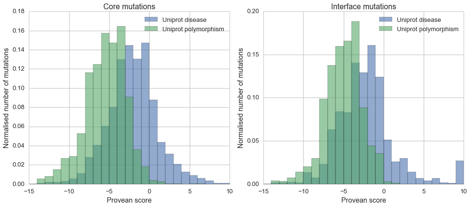
Provean score distributions for Uniprot disease / polymorphism mutations
(core mutations with solvent_accessibility < 20 and interface mutations with contact_distance < 4 A)
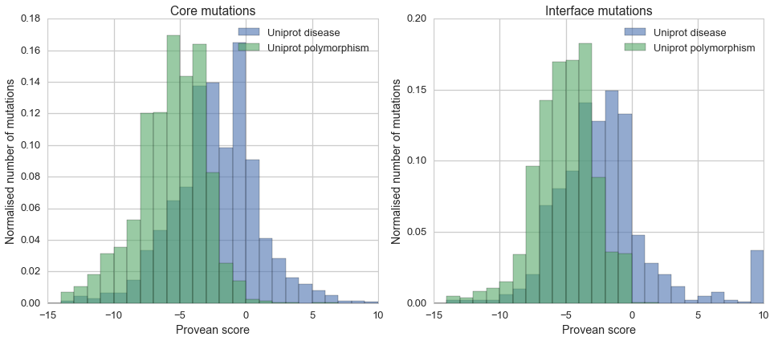
FoldX ΔΔG distributions all Uniprot disease / polymorphism mutations.
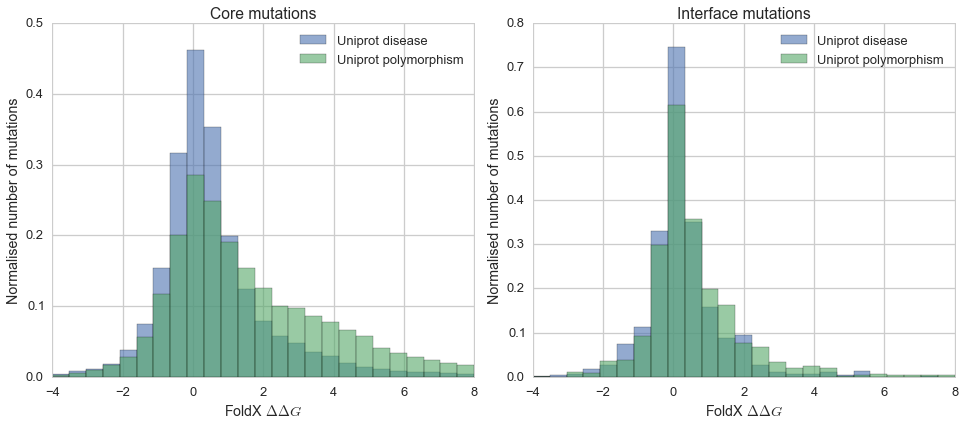
Foldx ΔΔG distributions for Uniprot disease / polymorphism
(core mutations with solvent_accessibility < 20 and interface mutations with contact_distance < 4 A)
ΔΔG predictions by FoldX and ELASPIC for Uniprot Disease / Polymorphism (updated)
Subgroup Splicing/Network, 2015-03-04
- 15,401 domain-domain interactions added by using protein-protein interaction data from the Rolland et. al. 2014 cell paper.
- Hard drive broke down, took a while to figure out how to get it to work with the spare 3TB one (needed a different partition table because > 2TB, etc.)...
- Added unit tests to the ELASPIC pipeline
- Select at random one uniprot domain and one uniprot domain pair with precalculated mutations and rerun the pipeline.
Distribution of ddG scores at different Provean thresholds
Subgroup Splicing/Network, 2015-02-18
Progress
Classifiers
- Some of the features are 0 for all training examples. Removed those features.
- Reran the hyperparameter optimization / feature-elimination pipeline
- The CORE classifier looks OK. The interface classifier looks iffy.
Elaspic documentation: http://elaspic.readthedocs.org
Databases documentation: https://drive.google.com/open?id=0B1FXQpQb4bbTVXdUa2g5b3psd2s&authuser=1
To do:
- Add protein-protein interaction data from the 2014 cell paper
- Make sure we have homology models for all proteins / interactions in the human proteome
- Integrate ELASPIC output / ELASPIC input / SIFT / Provean / GO terms / all the other features I presented before, in order to distinguish between disease / polymorphism mutations and driver / passenger mutations
- Write research paper (“combining structural and sequence information in order to predict the deleteriousness of mutations”)
Subgroup Splicing/Network, 2015-01-27
Feature elimination
After removing uninformative features:
Before removing uninformative features:
CORE
After removing uninformative features
Feature importance without Provean Feature importance with Provean
Before removing uninformative feature
Interface
After removing uninformative features
Interface mutations without Provean Interface mutations with Provean
Before removing uninformative features
After feature elimination
After removing uninformative features
Before removing uninformative features
Before feature elimination
Cosmic Core
FoldX reference Elaspic paper
Without provean With provean
Cosmic Interface
FoldX reference Elaspic paper
Without provean With provean
FoldX reference
Without provean With provean
FoldX reference
Without provean With provean
Performance of mutation scoring algorithms:
To do:
PDBfam summary
Double check the interface training set / classifier
Meta-classifier + other features for phenotype prediction?
Subgroup Splicing/Network, 2015-01-14
Progress:
- Bugfixes on the web server...
- FoldX expired in 2015. Had to hack it with libfaketime.so.1
- Daniel added a PDBfam info section:
- Added a README to the data download page:
- Added data to the domain-domain interaction table
- 8,967,336 uniprot domain pairs
- 255,145 had templates before, 459,385 have templates now
- Trained core and interface classifiers
- Precalculated data
- ~100,000 core mutations
- ~25,000 interface mutations
Examples of high-impact mutations:
Protein | Uniprot ID | Mutation | ddG |
Ribonuclease pancreatic | P61823 | Y123G | -11.7 |
Ribonuclease pancreatic | P61823 | Y123A | -12.0 |
Thioredoxin-1 | P0AA25 | D27I | 12.1 ? |
Subtilisin inhibitor | P01006 | V44G | -9.805 |
Lysozyme | P00720 | L91P | -9.555 |
Lysozyme | P00720 | L66P | -12.23 |
Bifunctional tail protein | P12528 | R382S | -17.4 ? |
Bifunctional tail protein | P12528 | K286R | -10.3 ? |
etc...
All features:
Subset of features with correlation > 0.10:
All features:
Subset of features with correlation > 0.10:
Subgroup Splicing/Network, 2014-12-17
Progress:
- 40 42.3 million domains with templates
Core mutations training set:
- 191 proteins
- 3948 mutations x 2
- xxx wild-type models + 11130 mutant models
Templates for the core training set at different identity thresholds
It really is 11,130 mutations...
Training the core classifier:
Now the data is balanced and has 71642 points:
The predicted scores ddG values the same “dynamic range” and FoldX (unlike previously)...
Remaining...
- Update the set of domain-domain interactions
- Retrain the domain-domain interaction classifier
- Daniel coming by on Monday to update the website and finish the 1-page proposal
- Look into ddG values > 10 or < 10.
Subgroup Splicing/Network, 2014-12-10
Recalculate domain and domain-domain interaction data
Progress:
- 60 million domains (vs. < 30 million)
- 40 million domains with templates (vs. 17 million)
- 374 thousand domain-domain interaction templates (365 thousand of those are human)
- Need PPI sources for other species (contacted the HIPPIE developers…)
Problem:
Some of the domains in our core training dataset were still absent from the database. The main reason is problems matching blast output with domain definitions in the database using a (pdb_id, pdb_chain, pdb_pdbfam_name, pdb_pdbfam_idx) tuple. pdb_pdbfam_name can change between version and pdb_pdbfam_idx is assigned inconsistently and is absent in the most recent file of PDB domain definitions.
Solutions:
- Updated the domain table in the elaspic database with domain definitions from Andres’ most recent version of PDBfam
- This is a bit of a hack because those domains were not passed through SCOWLP and thus are not included in the domain_contact table.
- Did not remove overlapping domains in order to maximize the match rate between blast output and the domain table.
- Made some (hacky) fixes to the Errors when matching PDBfam uniprot domain definitions with their respective PDB templates
Putting precalculated data on the webserver...
Getting the new version of elaspic to run on the virtual machine...
Subgroup Splicing/Network, 2014-12-03
1) Elaspic
Finished running PDBfam v3
- v1 was merging domains that were not supposed to be merged, finding a structural template for only a small region of the resulting superdomain
- v2 improved the domain merging behaviour, but in a small number of cases it for domains that had a structural template with v1
- Andres made new libraries, which were supposed to fix the missing templates bug (v3).
- Overall, we get templates for 2,881,625 domains for which we didn’t have templates previously
- But v3 does not find templates for 2,904,001 domains for which we had templates previously…
Uploaded new domain definitions to the database (making sure not to have duplicates, etc.)
Andres made a pretty good wiki for PDBfam: https://bitbucket.org/afgiraldofo/pdbfam/wiki/Home
To do:
- Daniel is coming by Thursday to fix a few bugs on the webserver and add a page to store precalculated data
- Add PDBfam to the methods section of the manuscript
- Recalculate domain domain interaction data
- Retrain classifiers
- Precalculate human uniprot structures and as many mutations as possible
2) Decision making under uncertainty course project
Mapping genes to diseases in the disease ontology (DO)
| DisGeNet (gv) | HPO-D | Overlap |
Number of unique genes | 1839 | 3158 | 0 |
Number of unique diseases | 2376 | 4919 | ? |
Number of unique gene-disease pairs | 2622 | 6481 | 0 |
Number (and %) of diseases that were mapped to the disease ontology (DO contains ~6000 diseases) | 233 (10%) | 782 (16%) | 220 |
Mapping EMR records to diseases in the disease ontology (DO)
STRIDE (Stanford Translational Research Integrated Database Environment)
(paper) (website)
Natural language processing of raw text in 20 million clinical notes spanning 19 years of data.
HuDiNe (Human Disease Network)
(paper) (website)
Medical claims data for elderly Americans enrolled in the Medicare program
| Stride | Hudine | Overlap |
Number of patients | ~1.2 million | ~13 million |
|
Number of unique diseases (‘concepts’) | 18,787 | 15,983 |
|
Number (and %) of diseases that were mapped to the disease ontology (DO contains ~6000 diseases) | 1635 (8.7%)
| 1888 (11.8%) | 702 |
Overlap between diseases mapped to genes and EMR records
Disease ontology terms with patient and disease information
Disease ontology terms with patient and disease information after DO was filtered to remove leaves without any information
The Bayesian network
Remaining:
- Construct and export the gene - disase ontology Bayesian network in a Hudine .net format that can be loaded into R and UnBBayes
- Analyse how tractable it is to perform inference on this network
- Perform sensitivity analysis on query genes given one or more disease observations
- Try using different utility functions to map from disease probabilities to disease rankings
- Learn a better network using EMR data in order to get better results…?
Subgroup Splicing/Network, 2014-11-19
1) Elaspic
- Emailed Andres about some problems that I noticed with the new version of PDBfam (some of the domains that previously had structural templates lost those templates).
- Andres updated the PDBfam libraries, which he says should fix those problems.
- Also, Andres says he’s happy if PDBfam appears in the methods section of the Elaspic webserver rather than as its own paper.
- Finding templates for new domain-domain interactions
- Making PDBfam libraries that are redundant and that are based on atom rather than seqres information (two pdbs might have the same sequence but different interaction partners)
- Fix errors that come up.
2) Decision making under uncertainty course project
- Medical expert system that uses gene-level information to predict diseases.
- Noisy-OR disease nodes that integrate input from several proteins
- Try to learn better weights for protein-disease edges using EMR data.
- Examine how tractable it is to do inference on this network and compare inference using different algorithms.
- Integrate different predictions in a gene ontology network and predict the most likely diseases based different specificity vs. misclassification utility functions.
Subgroup Splicing/Network, 2014-11-12
1) Uploading new domain definitions to the database.
Created a scripts that checks whether the new domain definitions overlap perfectly, overlap partially, or do not overlap at all with the existing domain definitions in the database.
- For domains that overlap partially, I deleted their overlapping partners in the database and uploaded the new variants.
- For domains that don’t overlap at all, I just added the new domain to the database.
- I did not change domains that overlap perfectly (in order to keep the models and mutations).
Q03924
New domain definitions:
vs. before:
Genome3D:
Provean
Number of mutations: 3953
Number of mutations with ddG entries: 3421
Number of mutations with dTm entries: 1827
Subgroup Splicing/Network, 2014-11-05
1) Comparing Pfam domain definitions, Gene3D domain definitions and PDBfam domain definitions.
Histogram of domain lengths for domains obtained from different sources.
https://drive.google.com/open?id=0B1FXQpQb4bbTQkVpdTZPNUtBMGc&authuser=1
Histograms of the fraction of domains from source A (rows) that are covered by domains from source B (columns).
https://drive.google.com/open?id=0B1FXQpQb4bbTUjc0a2R2Z1Z6dHM&authuser=1
Histograms of the number of domains from source B (columns) that overlap with domains from source A (rows).
https://drive.google.com/open?id=0B1FXQpQb4bbTNzJmdUY2c2Rkakk&authuser=1
2) Correcting bad domain definitions
- Ran a few test cases using an updated version of PDBfam scripts and libraries (found in the most up-to-date folder in Andres’ directory on beagle). The updated version of PDBfam appeared to have most of the errors resolved.
- Downloaded Pfam domain definitions for all known protein sequences (as of 14-07-17) from the simap database.
- Wrote R scripts that run simap domain definitions through the updated PDBfam pipeline.
- Analysed all sequences that could be matched to a uniprot identifier.
- 42,608,671 vs. 18,217,258 unique uniprots (out of a total of 53,285,583 proteins in our uniprot database)
Q03924
Current definition:
Current definition:
Andres PDBfam definitions:
97 | 143 |
| zf-C2H2_6 |
144 | 218 |
| zf-H2C2_2 |
219 | 280 |
| zf-H2C2_2 |
267 | 483 |
| zf-H2C2_2 |
3) Decision making under uncertainty course project
- Medical expert system that uses gene-level information to predict diseases.
Subgroup Splicing/Network, 2014-10-29
Parsing the Protherm database
- Found the uniprot id and uniprot name for rows where only the protein name is specified, making sure that the uniport sequence matches the mutated amino acids (4 cases).
- For mutations that occur multiple times, removed rows that have a “remarks” entry (remarks often are about the presence of urea or guanidinium chloride)
- If still there are multiple entries for a given mutation, took the median of the ddG_H2O, ddG and dTm values.
- For the final “change in Gibbs free energy” value, took ddG_H2O if it is given, ddG otherwise.
- Added 56 mutations with dTm values from another study.
- A survey of proteins encoded by non-synonymous single nucleotide polymorphisms reveals a significant fraction with altered stability and activity. Allali-Hassani et. al. 2009.
Number of mutations that have ddG_H2O, ddG and dTm in the Protherm dataset
https://drive.google.com/open?id=0B1FXQpQb4bbTZ2NTRVJUZHF5Ums&authuser=1
Updated version 14-11-14
https://drive.google.com/open?id=0B1FXQpQb4bbTcXlzSkNlNnJ6VDg&authuser=1
Successfully mapped 1357 mutations disrupting protein-protein interactions
Mutations affect 61 distinct protein-protein pairs
Number of mutations: 3953
Number of mutations with ddG entries: 3421
Number of mutations with dTm entries: 1827
Number of unique (uniprot_id_1, uniprot_id_2, uniprot_mutation) tuples
Overall: 1218
Mutation matches the uniprot sequence : 1166
Uniprot has at least one domain: 1122
Mutation inside domain: 1094
Interacting residues inside domain: 1109
Both mutation and interacting residues inside domain: 1084
Converting ΔTm values to ΔG values
- Carles found a formula that approximates ΔG from ΔTm
- This makes ΔG and ΔTm more correlated, but the slope is off by a factor of ~ 5.
- Not all rows with ΔTm have ΔH...
Change in the Gibbs free energy vs. change in the melting temperature
https://drive.google.com/open?id=0B1FXQpQb4bbTTnJmdHJ2WU16Qms&authuser=1
ΔΔG reported in Protherm vs. ΔΔG calculated from ΔTm
https://drive.google.com/a/kimlab.org/file/d/0B1FXQpQb4bbTVE8wYnNZcjhpRkE/view?usp=sharing
https://drive.google.com/a/kimlab.org/file/d/0B1FXQpQb4bbTc2FwdDlfRUNvRms/view?usp=sharing
14-12-31 update:
Making models having varying sequence identity with the templates
- For each protein, found templates with sequence identity falling in the bins:
- 0 < x≤ 40; 40 < x≤ 60; 60 < x≤ 80; 80 < x ≤ 100;
- Made homology models using the templates above for all wild-type sequences and all point mutant sequences.
- Ran elaspic on all forward and reverse mutations
Skempi
Mapping mutations to interfaces:
3047 entries describe mutations mapped to PDB structures (2795 unique PDB-mutation pairs):
730 entries -> no interacting residues within 10 Å of the mutation
509 entries -> more than one partner chain within 10 Å of the mutation
(usually interaction between heterodimers)
1808 entries -> interaction could be mapped to two chains
Mapping mutations to uniprot:
Out of 1808 entries with interactions that could be mapped to two chains:
1480 could be mapped to interactions between two uniprots
1407 mutations match the uniprot sequence
71 mutations match the uniprot sequence after being reversed (change ddG sign)
Mapping mutations to domains:
End up with 1333 unique (uniprot_id_1, uniprot_id_2, mutation) tuples
1331 where the mutation matches the uniprot sequence (SIFTS may have a different residue for the uniprot field and the pdb atom field)
53 are reverses of existing mutations
But… found problems with domain definitions…
e.g.
Superdomain: SH3_1,PB1,SH3_1
Original domain definitions: 246:291,351:429,463:508
Final domain definition: 455:516
Subgroup Splicing/Network, 2014-10-22
Making homology models for human uniprot:
- 141,151 domains
- 103,202 domains with structural templates (73%)
- 101,549 domains with homology models (98%)
- Human protein domain-domain pairs
- 208,328 domain pairs
- 41,188 domain pairs with structural templates (20%)
- 35,582 domain pairs with homology models (86%)
- Errors for ~2500 proteins (another ~2500 proteins have < 35% sequence identity with the template). Re-running elaspic for those proteins appears to fix the errors.
https://drive.google.com/a/kimlab.org/file/d/0B1FXQpQb4bbTV3B6WF9taUQyZmc/view?usp=sharing
Mapping Ensembl and Refeseq to Uniprot:
- Added canonical Uniprot ids in place of the corresponding splice variant ids in the Uniprot mapping table.
- The id mapping table provided by Uniprot uses the uniprot splice id (e.g. A0AUZ9-1) for all Ensembl-to-Uniprot and Refseq-to-Uniprot mapping. However, the fasta file containing all Uniprot sequences uses the base uniprot id (e.g. A0AUZ9) for the canonical splice variant. Previously, I was not able to map many Ensembl proteins to Uniprot because I could not find an entry for the canonical splice id in the Uniprot sequence table (e.g. I was looking for A0AUZ9-1 instead of A0AUZ9). In order to fix this, I downloaded the complete Uniprot dump, parsed it to get a list of canonical splice variants, and replaced those splice variant ids with the corresponding Uniprot ids in the id mapping table (e.g. A0AUZ9-1 --> A0AUZ9).
- Mapped all Human Ensembl and Refseq sequences to Uniprot. Performed global sequence alignments using MUSCLE for cases where the sequences are not identical.
- Wrote a MySQL function to convert AA position from Ensembl or Refseq coordinates to Uniprot coordinates.
Ensembl to Uniprot | Refseq to Uniprot |
83,037 exact matches 83,008 unique ensps (83.5%) 72,532 unique uniprots
6,110 partial matches 5,505 unique ensps (5.5%) 5,021 unique uniprots | 45,056 exact matches 42,916 unique ensps (60%) 32,550 unique uniprots
11,743 partial matches 9,391 unique ensps (13%) 7,582 unique uniprots
|
Sequence identity of partial matches | Sequence identity of partial matches |
Sequence coverage of partial matches
| Sequence coverage of partial matches
|
Loading the results of various mutation-scoring algorithms to the mysql database in hg38 coordinates:
- SIFT and Polyphen-2 results for dbSNP, COSMIC, hapMAP, 1000 genomes, etc. (<7 million transcript mutations).
- SIFT and Provean results for dbSNP (~3 million transcript mutations).
- MutationAssessor scores for all Uniprot proteins (~76 million protein mutations).
- SIFT, Polyphen-2, MutationAssessor, FATHMM, and CONDEL scores (where available) (~240 million transcript mutations).
Converting Ensembl Variants mutations to Uniprot coordinates leaves ~6.2 million transcript mutations.
https://drive.google.com/a/kimlab.org/file/d/0B1FXQpQb4bbTWldwT0NKdUZHZTA/view?usp=sharing
Machine learning for predicting the energetic impact of mutations:
- Reparsing the Protherm data file. There are cases where the pdb id is incorrect, or no pdb id is given. Have to map those cases to uniprot individually.
- Add the inverse of the training mutations to the training set, and use models in different bins of sequence identity.
- Add data from http://www-02.all-portland.net/bj/424/0015/4240015.pdf to the dTm training set.
- See how much SIFT / Provean improve classifier performance.
- Train a predictor for both ddG values and dTm values?
- Add a feature quantifying the conservation of amino acid in the ~5A vicinity of the mutated residue.
After removing rows with multiple mutations, and rows where mutation is null:
Subgroup Splicing/Network, 2014-10-xx
To do:
- Look for a larger ddG training set of domain and interface mutations
- ASEdb: the Alanine Scanning Energetics database (http://www.asedb.org).
- Reparse the Protherm and Skempi datasets to include proteins without structures
Progress:
- Submitted all human uniprot to protherm / skempi
- Look for a larger ddG training set of domain and interface mutations
- ASEdb: the Alanine Scanning Energetics database (http://www.asedb.org).
- Reparse the Protherm and Skempi datasets to include proteins without structures
Subgroup Splicing/Network, 2014-10-xx
Predicted ddG scores (top) and FoldX ddG scores (bottom) for uniprot disease mutations and polymorphisms (left) and cosmic drivers and passengers (right).
https://docs.google.com/a/kimlab.org/file/d/0B1FXQpQb4bbTNHk0cmo5SlRIczQ/edit
Feature importances for the protherm regressor.
https://docs.google.com/a/kimlab.org/file/d/0B1FXQpQb4bbTclBVSUtQdHlFTk0/edit
Subgroup Splicing/Network, 2014-09-24
Progress:
- Have calculated ~50,000 domain mutations and ~8,000 interface mutations.
To do:
- Look for a larger ddG training set for domain and interface mutations.
- Retrain the classifiers and update ddG predictions for the calculated mutations.
- Update the script that parses log files to find and categorize errors. Look through the errors that occur and try to fix them.
- For errors that are due to incorrect PDBfam definitions, look into the new version of PDBfam to make sure that they don’t occur, and email Andres if they still occur.
- Ask Andres if he can change the libraries that we use for finding templates for Uniprot to include all sequences, rather than only the non-redundant sequences.
- Compute more protein-level features:
- (average?) position of the protein in the pathways in which it is involved (with pathways transformed into directed graphs using the graphite R package).
- a vector indicating the “type” of pathways in which the protein is involved
- average coexpression of a protein with all other proteins in the cell
- Create disease-specific protein expression profiles using the connectivity map gene expression data.
Subgroup Splicing/Network, 2014-09-17
Mutation training sets
Cosmic drivers:
>= 10 publed ids
>= 30 mutations
>= 1 “driver” mutation predicted by FATHMM
Cosmic passengers:
< 10 publed ids
< 30 mutations
0 “driver” mutation predicted by FATHMM
Uniprot disease and polymorphic proteins
Parsed ‘humsavar.txt’ file from unipot. Disease proteins are those that have at least one mutation marked as “Disease”. Polymorphic proteins are those that only have mutations marked as “Polymorphism”.
Cosmic
Uniprot
Gene essentiality
Uniprot Cosmic
Physical interaction network (Hippie)
Genetic interaction network (human radiation hybrid study)
Functional interaction network (String)
Functional interaction network (String)
Subgroup Splicing/Network, 2014-09-10
Progress:
- Updated to the new version of FoldX (version 3 beta). Changed the pipeline to include water molecules in domain structures (including interfaces). Had to find and set some parameters in modeller in order for modeller to work.
- Noticed that tcoffee was running for an unusually long amount of time for some structures. Eventually discovered that in order to perform structural alignments, tcoffee is querying the pdb online. While we supplied tcoffee with the path to the local pdb, it wasn’t using it because it expects pdbs to be split into individual chains. Replaced the ‘expresso’ mode where tcoffee tries to find the best structural template with a structural alignment where both structures use the structure of the template (tmalign_pair, muscle_pair, sap_pair). The alignments between distant homologues can be improved using hidden markov model profiles (to do?).
- Added quotes around file names in the code because the asterisk in “elaspic_v2/human/P09/00/P09001/Ribosomal_L3*103-300” would cause buggy behaviour. Replaced the asterisk with dot so that now it is “Ribosomal_L3.103-300”.
- Incorrect domain definitions for some domains in PDBfam. The end of the domain is smaller than the start. Did manual correction for some of the biggest culprits (GPCRs). Emailed Andres. He is working on it…
- Uploaded splicing variants to the database. Still running elaspic on them… (servers are packed)
Known elaspic errors
- Sometimes you end up with poor alignments because MUSCLE puts in too many gaps, and later on modeller crashes when it has to model long loops.
To do:
- All from below
- Expand pfam profiles or create new hidden alignments for PDBfam domains. This could be used by FATHMM for predicting the pathogenicity of mutations, for creating better alignments, for predicting coevolving residues, etc.
Subgroup Splicing/Network, 2014-08-27
Progress:
- Mapping 99,459 human protein sequences from Ensembl to Uniprot:
- Using the id conversion table provided by Uniprot, find an exact sequence match for 70,013 sequences (plus 32 duplicates).
- Using sequence hash tables, find an exact sequence match for 90,351 sequences. However, there are 44,442 duplicates, and choosing the correct match is problematic.
- Using the external references provided with the Ensembl database, find an HGNC match for 96,928 sequences, a Uniprot match for 48,938 sequences and an exact Uniprot sequence match for only 6,878 sequences (have to map through the ensembl ‘gene’ identifier).
- For COSMIC v70, 1,378,894 mutations have a ENST accession, and 1,002,253 of those can be mapped to a uniprot with an identical sequence (can increase this a bit if I also include refseq accessions).
- Ran 24,774 COSMIC “driver” mutations that I identified last week.
- The structural modelling is done but I don’t have ddG for most of them because Provean is still running (will be done in a couple of hours)
COSMIC_DRIVER_V70
Domain errors:
0. Protein does not have any pfam domains: 10122 (1466 proteins, 1008 of which are splice variants...)
1. The mutation is outside of a domain but not all domains have structural templates: 0
2. The mutation is outside of a domain for all domains: 2914
7. A model of the domain containing the mutation could not be created: 357
8. The energetic impact of the mutation could not be calculated: 4047
Completed: 727 (66 proteins)
Interface errors:
2. The mutation is outside of a domain for all domains: 2498
5. Could not build a model of the interaction: 303
6. Mutation is outside the interaction interface: 2829
8. The energetic impact of the mutation could not be calculated: 1013
Completed: 365 (18 proteins)
- Finally fixed the Provean bug that lead to insanely-high temp space usage (a bug in cd-hit made it go in an infinite loop if “long” sequences were present in the alignment)
- Mined the Ensembl database to get mutation sets from Uniprot, ClinVar, PhenCode and LSDB. The mutation set for HGMD does not include the changed amino acid (I guess you have to pay HGMD to get this information…)
- Downloaded the gene ontology and ~6000 gene enrichment datasets for pathways, etc. from GSEA (excluding GO):
- The idea is to use a log-odds score for the GO terms, and a set of principal component vectors for the GSEA protein sets as some of the features.
To do:
- Finish running Provean and calculate ddG for COSMIC mutations. Run HMMER on splicing variants (email Joan and Andres)?.. Check the data for consistency and look for interesting changes / pathway rewiring, etc.
- Read the FATHMM paper and play with their code. A good way of dividing COSMIC mutations into drivers and passengers?
- Divide iRefIndex data into organism-specific protein-protein interaction and genetic interaction networks.
- Compare the human PPI network with Biogrid to make sure that it is more complete.
- Create two PPI networks, one with high-confidence interactions and the other with low confidence interactions?
- Create a functional interaction network using STRING.
- Calculate some network-based features for the nodes and edges in those networks.
- Think about better ways of using pathway information?
Subgroup Splicing/Network, 2014-08-20
Progress:
- Found templates for all uniprot domain pairs.
- In total we have templates for 17629 domain-domain interactions (out of 78839 interactions between domains that have a structure of the corresponding clan-clan interaction). This is up from 16204 interaction templates that we had before.
- Parsed the new version of COSMIC (v70)
- The new version has 1,424,054 (redundant) missense variants
- 1,274,335 of the variants (90%) could be mapped to an ensembl or refesq sequence
- 765,745 of the variants (54%) could also be mapped to a uniprot sequence
- For 708,477 of the variants (50%) the ensembl and the uniprot sequence are the same.
- This corresponds to 489,228 non-redundant mutations in 13,516 proteins
- 24,774 mutations (in 3,560 proteins) are labelled as drivers by fathmm.
- Downloaded tables for the ENSEMBL core database and the ENSEMBL variants database and uploaded them to the MySQL server.
- The ENSEMBL core database contains ENSG -> ENST -> ENSP mapping, alternative splicing, mapping to external identifiers
- The ENSEMBL variants database contains curated variants from a large number of databases, including dbSNP, COSMIC, OMIM, Orphanet, HGMD, and ClinVar, together with SIFT and PolyPhen-2 scores for missense mutations, allele frequency from the 1000 genomes project, and the associated disorders.
To do:
- Run a large set of disease variants and negative controls (maybe using SciNet)?
- Load Reactome and GO information to the database. Look into updates to iRefIndex and ways of filtering it to create a reliable protein-protein interaction network.
- ...Run 2 more steps in scowlp (structural alignment and clustering of domains and Rosetta PeptideDeriver to find the peptides with the highest binding energy for each domain).
Subgroup Splicing/Network, 2014-08-13
Progress:
- There was a small bug in the template finding code (one of the uniprot sequences was missing), but it took a long time to track this down.
- PDBfam still leaves some overlapping domains, so I corrected those manually.
- If the domains overlap by < 50% of their length, I truncated them at the halfway point in their overlap
- If the domains overlap by > 50% of their length, I removed the shortest domain.
- This leads to the removal of 459184 domains (< 2%)
- After including pdbs without CATH, we have structural templates for 73% of all domains (up from 68% when pdbs without CATH were not used).
- Switched from DSSP to Stride for predicting secondary structure (DSSP and Stride are reported to give the same results in 95% of the cases, and Stride may be better because it uses hydrogen bonding in addition to torsion angles?)
- Running this for the Protherm training set we now get 3180 out of 3384 mutations (94%).
- 17 mutations are in proteins without pfam domains
- 179 mutations are outside all of the pfam domains
- 9 mutations need closer examination
To do:
- Find domain-domain interaction templates
- Preparing a set of cosmic driver and passenger mutations (mapping amino acid positions from ENST to Uniprot…)
- Run 2 more steps in scowlp (structural alignment and clustering of domains and Rosetta PeptideDeriver to find the peptides with the highest binding energy for each domain).
Subgroup Splicing/Network, 2014-08-06
Progress:
- Decided to fix some of the bugs in scowlp code and rerun it for the pdb (part 2)...
- For each pdb, put all the communication between the program and the database inside a transaction, so that interrupting the program part-way does not result in data “corruption”.
- Introduced all the required unique constraints (e.g. domain_1 and domain_2 for a domain_contact table) and foreign_key constraints (e.g. atom -> residue) into the database and fixed any inconsistencies.
- Rerunning trembl using the new pdbfam library (with pdbs without cath information) is ~80% complete.
- R crashes in some cases and this has to be fixed.
To do:
- Find templates for uniprot domains and uniprot domain pairs
- Fix the dssp bug
- Run elaspic on the training sets and a large set of disease mutations
- Run additional steps in scowlp (run rosetta peptide-deriver and the structural classification of interfaces)
Subgroup Splicing/Network, 2014-07-30
Progress:
- Decided to fix some of the bugs in scowlp code and rerun it for the pdb
- Fixed the a bug that caused a crash if domain definitions involve a letter (1A:6D)
- Changed scowlp code to allow for parallel processing on multiple nodes. (However, if too many jobs are submitted at the same time, the MySQL database causes problems).
- Ran the code for finding domain-domain interactions and for filtering those interactions using Noxclass
- After rerunning scowlp we have 330,756 domain-domain interactions involving 58,079 pdbs (vs. 343,133 domain-domain interactions involving 57,672 pdbs that we had before??)
- Trying to figure out why I have fewer domain-domain interactions in the new version. Pdbs that appear at least once are not included when you rerun the program…
- Ran the elaspic pipeline on the Protherm dataset using templates precalculated with pdbfam
- Back to 1404 out of 3384 mutations
- Correlation coefficient between FoldX ddG and observed ddG is 0.351, which is similar to what it was before
- Judging by the logs, most of the failed mutations are due to an error raised by the dssp (boost::thread_resource_error) on the new nodes. This is due to boost starting too many threads on the node. I had this error before and just put in a “retry in a minute statement”, but seems like this is not enough.
PROTHERM
Domain errors:
0. Protein does not have any pfam domains: 17
1. The mutation is outside of a domain but not all domains have structural templates: 0
2. The mutation is outside of a domain for all domains: 179
7. A model of the domain containing the mutation could not be created: 0
8. The energetic impact of the mutation could not be calculated: 1784
To do:
- Fix the inconsistencies with the scowlp domain-domain interactions
- Run pdbfam using new libraries (both with and without cath) and using new scowlp output.
- Find templates for domain pairs
Subgroup Splicing/Network, 2014-07-23
Elaspic:
- Wrote code for finding the best structural template for uniprot domain pairs. Sort templates based on the product of the overall and interface scores.
- score = (alpha * (identical + 0.5*conserved) * coverage) - (1 - alpha) * coverage
- score_if = identical_if + 0.5 * conserved_if
- Made changes to the pipeline and it now runs well using the new domain and domain pair templates.
- The trembl dataset contains 18,187,173 uniprots and 23,743,525 pdbfam domains. Found structural templates for 16,188,914 of those domains (last week).
- There are 61,821 unique uniprot domain-domain interactions with a structural template involving the same pdbfam pair.
- Found domain-domain interaction templates for 17,101 of those uniprot domain pairs.
- There are 108,159 unique uniprot domain-domain interactions with a structural template involving the same clan pair (46,338 interactions found using pfam clan pairs and not using pdbfam pairs).
- But! Realised that I did not remove from the new version of scowlp domain-domain interactions that occur on the same chain in the pdb. (Previously I was ignoring those pairs inside the pipeline, but here it is easiest if I remove them from the database).
- Instead of 343,133 domain-domain contact templates we now have 179,739
- This lowers the number of “uniprot domain-domain interactions with a structural template involving the same clan pair” to 89,846.
To do:
- Find templates for domains and domain pairs using the new libraries that include pdbs without CATH (Andres’ made the new libraries).
- Find templates for uniprot domain pairs that have a pfam clan match for their interaction.
- Make sure that the interface scores match up with the interface amino acids, and so some sanity checks on produced alignments and models.
- Retrain the classifiers using models obtained with the new template-finding algorithm
- Edit the scowlp code to fix the errors thrown when the domain starts or ends with a residue that has a letter in the resnum.
Subgroup Splicing/Network, 2014-07-16
SCOWLP:
- Changed the SQL query to prevent the table from being written to disk and sorted. This made it way faster, especially when splitting the job into multiple subprocesses. (Joining domain_contact with two domain tables and sorting by domain contact id).
- Changed Noxclass code to prevent crashes caused by multiple naccess *.rsa files being present in the same folder.
- In total, the new version of scowlp has 343,133 domain-domain contacts (the old version using non-redundant domain contacts from pdb biounits had 237,620 domain-domain contacts).
- 32,553 domain contacts were not analysed by Noxclass (mainly because they are domain-ligand contacts)
- 6,847 domain contacts led to a crash because the interface area according to NACCESS is zero? This is probably a bug in scowlp...
- 243 timeouts
- 319 other errors
- For the elaspic domain contact table, filter the results using a 70% NOXclass cutoff (didn’t do this in the previous version of elaspic…)
PDFfam:
- Removed overlapping domains in the uniprot domain definition file from pfam.
- Used Andres’ PBfam to join superdomains and repeating domains and to find structural temples for the entire uniprot. However, the latest version of pfam uses the June 2012 uniprot release...
- Made scripts to interact with R code from python. Could integrate R into the elaspic pipeline
- Encountered a few bugs with the PDBfam package (missing blast databases for a few families and minor inconsistency in family naming). Emailed Andres and he fixed this.
ELASPIC:
- Changing the structure of the database and code to work with the new version of PDBfam (don’t need a template table since templates and domains are found at the same time, etc.).
- Works for domain mutations
- Still have to make it work for interface mutations (write code for finding the best templates for the interaction using blast).
Why did the old way of finding templates take so long?
P21817 (Ryanodine receptor 1) 13 Pfam domains
Finding domain templates
115 templates analysed takes ~ 2 hours
Finding domain pair templates
620 templates analysed takes ~13 hours
41 uniprot proteins interact with Ryanodine receptor 1. Have to find the best template for each of those interactions. > 10 family cluster pairs for each interaction. Results from previous runs are not reused, so a lot of redundant work.
Subgroup Splicing/Network, 2014-07-02
New scowlp:
- Script for running Noxclass crashes
- Was trying to make it run in parallel, but couldn’t get it to work
- Even as a single thread it stops part-way through
- Setting up python and R on the cluster
- Had trouble making R and python work together on the cluster
- Have to recompile a separate version of R (the one on banting is outdated)
- R requires the readline library which was not installed on banting, so had to install it in a local folder.
- The readline library is different of banting and beagle, so need separate python installations for the two clusters.
- Making rpy2 (the interface between python and r) link against the new R version……..
- In the end, switched to conda, which offers binary package management for python. Conda included a local version of readline and other required system libraries, and so the same package can be run on banting and beagle. Downloaded R binaries which were compiled using conda, and set up build scripts to install all the required packages for Andres’ PDBfam and PDBfam itself. The advantage of this approach is that elaspic can be installed together with all of its R and python dependencies using `conda install -c path_to_repo elaspic`
Slow domain expansion:
- Many pfam domains that take forever (e.g. Q8WZ42)
- Structural alignments take minutes
Subgroup Splicing/Network, 2014-06-18
Debugging the pipeline
Protherm:
- 2957 out of 3384 mutations (87%).
- Correlation between FoldX ddG and experimental ddG: 0.30
- Correlation between FoldX ddG and experimental ddG using structures (Niklas): 0.47
- (The previous training set had 30 duplicates involving the same mutation in the same protein but mapped to a different chaind and / or a different pdb)
Skempi:
- 426 out of 862 mutations (49%).
- Correlation between FoldX ddG and experimental ddG: 0.47
- Correlation between FoldX ddG and experimental ddG using structures (Niklas): 0.44
Disease:
- 1944 out of 2721 mutations (71%)
Machine learning
Protherm:
- Leave-one-out cross-validation while excluding members of the same pfam family and clan from the training set results in a correlation coefficient of 0.68 (without any optimisation).
Skempi:
- A very repetitive training set, involving only 37 different uniprots from 34 different pfam families.
- Performing leave-one-out cross-validation where members of the same pfam family and clan are excluded from the training set results in 87 or 103 training data points in the majority of cases.
- Correlation coefficient is only 0.37 (without optimization and provean)
- Correlation coefficient is 0.74 when using plain leave-one-out cross-validation.
Hanif’s scripts
- Finished making all the domain contact and ligand contact tables, together with the associated residue-level and atom-level mapping tables (took half a week to run on a single node).
- Need to run noxclass, and will then have all the information required to use the new pdbfam for the pipeline.
- Errors when the pdb domain starts with a mixed number/letter (e.g. 10A)
To do:
- Change the template-finding / alignment stage of the pipeline to use Andres’ approach with blast libraries for each pdbfam family.
- Ask Andres to edit his scripts to make it possible to use pdb annotations from pfam?
- Need a larger training set, particularly for interface mutations. Do not need an exact crystal structure. Maybe even use peptide-binding information?
- Edit Hanif’s / Joan’s scripts to fix bugs and to make it take into account small molecules (drugs). Could then use chemical similarity (Tanimoto coef., etc.) to find similar drugs that would target the same protein.
Subgroup Splicing/Network, 2014-06-04
- “fn3|1” from pdb 3r8qA fixed from Sebastian’s version.
- Protherm: 3077 out of 3384 mutations; (dG_wt, dG_mut, ddG): (0.025, 0.027, 0.446)
- Skempi: 475 out of 862 mutations; (dG_wt, dG_mut, ddG): (0.092, 0.079, 0.679)
- Disease: 2209 out of 2721 mutations; (dG_wt, dG_mut, ddG): (0.408, 0.408, 0.467)
To do:
new pdbfam
Hanif’s scripts
Subgroup Splicing/Network, 2014-05-28
- Good structural templates do not necessarily come from the same pfam family (e.g. no structural templates for “GSH_synthase” but get a good match for “GSH_synth_ATP”). This goes back to the problem Andres was trying to solve in the previous subgroup meeting, by constructing blast libraries by clan name rather that family name.
- I modified the pipeline so that, if a structural template that exactly matches the pfam name cannot be found, the pipeline looks for structural templates for pfam names that have the same prefix only. For example, for the superdomain ‘A_1+B_2+C_3’, the pipeline would first try to find a structural template that has the exact name ‘A_1+B_2+C_3’. If it does not find any hits, it would then try to find unique structural templates for ‘A’, ‘A+%’, A_%, ‘%+A’, ‘%+A+%’, or ‘%+A_%’ (% matches anything) and likewise for ‘B’ and ‘C’.
- Should we use pfam definitions downloaded from the pfam website or pfam definitions obtained by parsing hmmer output?
- The two do not always match and this leads to missing domains and other inconsistencies when finding structures for uniprot domains.
- For example, below are pfam and hmmer domain definitions for chain A in the pdb 1m6i:
- Added a 25% hard cutoff for sequence identity (for either of the two chains) to speed up computation.
- FoldX fails when the PDB has methylated residues: MLZ (N-Methyl-Lysine), MLY (N-Dimethyl-Lysine) and M3L (N-Trimethyllysine). Emailed the FoldX group but they said that this is expected. Modified the pipeline so that the methyl carbons are removed and the residue is renamed to LYS.
- Difficult to know how much memory would be required for each job. FoldX and dssp sometime quit with some form of a thread error, (“thread_resource_error”, could not start a new thread, etc.)
- Some structures still fail the check to make sure that the uniprot and pdb are aligned. This is difficult to track down. Sometimes the error is not reproduced when running the job locally.
- Have difficult uniprots with many repeating domains, with each of those domains potentially responsible for the same set of interactions.
Protherm data: 3089 out of 3414 (90%) but only 0.58 correlation coefficient in ddG.
To do:
- Using pfam domain definitions downloaded from the pfam website rather than hmmer output?
- Run the pipeline using raw structures to make sure that the output matches Niklas.
Subgroup Splicing/Network, 2014-05-21
- Genome3D: a compilation of UK resources for predicting and modelling CATH and SCOP domains for Uniprot proteins on the genome scale http://www.genome3d.eu/uniprot/id/P04637/annotations
- Interactome3D data is available for download: http://interactome3d.irbbarcelona.org/download.php
- SCOP got an update (SCOP2): http://scop2.mrc-lmb.cam.ac.uk/
- Added the option to use mmCIF files. However, PDBFam (and interactome3D) is based on biounits, which are available for download only in pdb format, so went back to pdb. If we recreate biounit information from mmCIF file headers, then we can use mmCIF.
- Changed the pipeline so that, if model building fails, the pdb template is added to the blacklist and the pipeline runs again to find the new best template. This should happen only when there is no other way to correct the error (i.e. the pdb file is hopeless), so I am not using this when debugging.
- Rewrote the way heteroatoms are handled after parsing the pdb. All heteroatoms are moved to a separate chain which follows the chain(s) with all the amino acids for a single domain or a domain pair. This does not change the 3D structure, but makes it easier to create an alignment for modeller that does not give the “Alignment sequence not found in PDB file” error. This also simplifies other aspects of the pipeline as well: no need for heteroatom flags; a single domain can be found in chain [A]; a domain pair can be found in chains [A, B], with the order corresponding to the order of uniprots in the database (i.e. uniprot_id_1, uniprot_id_2).
- Resubmitted the skempi and protherm jobs, and they are still running...
To do:
- Go over the error logs for the new set of jobs...
Subgroup Splicing/Network, 2014-05-14
- Removed duplicate items from `uniprot_domain_pair` (a table that lists all pairs of domains for uniprots that are known to interact and for which we have a structural template). Duplicate items were causing mismatches between alignments and models because alignment files would be saved in the same folder, overwriting alignments that are already there. Alignment for the same domain do not have to be the same because there is some randomness in the template expansion process.
- Pipeline now removes H_ACE from the N-terminus of PDBs (not present in the uniprot sequence but present in the modeller pdb as part of the chain and not as a heteroatom).
- Changed the python file that accesses the database to keep it’s access to the database transient rather than maintaining a transaction the entire time that the pipeline is running (in some cases, I think this was causing missing values in the database if the pipeline was killed before completing its job, i.e. some mutations don’t have model information).
- Changed input to FoldX from 15 AA sequence snippets (which would cause errors for dimers, etc.) to a specific position in the chain.
- Changed the template expansion and modelling stages of the pipeline from using the SEQRES (construct) sequence to using ATOM sequence. The two sequences sometimes report different amino acids, and this was causing modeller to throw the 'Alignment sequence not found in PDB file' error.
To do:
- Using the ATOM sequence leads to new errors due to different pdb eccentricities. Have to check individual cases and make exceptions.
- Using mmCIF instead of PDB files? The biological assemblies are available from PDB only in PDB format, but both PDB and mmCIF files have a header that describes the transformations that are necessary to get the biological unit. This should be coordinated with PDBFam…
Subgroup Splicing/Network, 2014-04-30
- Nothing new
- Project due Friday...
Subgroup Splicing/Network, 2014-04-23
Obtained Provean scores for all Protherm and Skempi mutations that I was able to calculate (and > 90% of disease mutations). In some cases, provean need a lot of disk space and memory. Put in checks so it doesn’t crash nodes.
Protherm data:
- 2565 out of 3414 mutations (previous value included duplicate domains from P06241 and P24821)
- For the 849 failed mutations:
- 17 mutations: fall in a protein without any domains [P10762, P00094, P19614]
- 159 mutations: error finding and expanding a template
- 146 mutations: mutation falls outside of a domain
- 9 mutations: error making a model
- 518 mutations: error obtaining mutation properties (FoldX, etc.)
- 0.13 overall correlation in FoldX dG between PDB files (Niklas) and modelled domains
- Average for top 500 mutations sorted by dG_wt correlation: 0.98
- Average for top 1000 mutations sorted by dG_wt correlation: 0.85.
- Average for bottom 1000 mutations sorted by dG_wt correlation: -0.05.
- 0.65 overall correlation of FoldX ddG between PDB files (Niklas) and modelled domains
- Average for top 500 mutations sorted by dG_wt correlation: 0.65
- Average for top 1000 mutations sorted by dG_wt correlation: 0.70.
- Average for bottom 1000 mutations sorted by dG_wt correlation: 0.61 correlation.
Skempi data:
- 94 out of 862 mutations (lower than before because, again, there were some duplicates)
- 22 of those mutation occur in interactions that are not reported in iRefIndex (or BioGrid)
(P52799, Q96L35) (P01112, Q03386) (P06241, P03406)
(P11233, P15879) (P01006, P00782)
- For the 768 failed mutations:
- All mutations are in proteins that have at least one domain
- 478 mutations: occur in interactions that are not present in iRefIndex (and BioGrid) + PDBFam. Need to investigate why these interactions were not added to the database when I added all contacts from PDBFam.
(P00766,P01051) (nan,P0A0L5) (P19909,P01857)
(P12643,Q5D734) (P01852,P01552) (Q9BYF1,P59594)
(P68390,P00777) (P78310,Q65914) (P01857,P38507)
(P01075,P00730) (P77173,P0A9A6) (P0CH28,Q13191)
(P04578,P01730) (P68390,P08246) (P46672,P46655)
(P00766,P80060) (Q03405,Q5PY49) (P38446,Q7A260)
(Q9Y5Y6,P00974)
- 35 mutations: could not find and expand templates for (any of the) domains
(2i26,Q8JGG7,P00698) (1s1q,Q99816,P0CG48)
(1xd3,P0CG48,P15374) (1iar,P24394,P05112)
(1h9d,Q13951,Q01196)
- 31 mutations: found and expanded at least one template, but the mutation falls outside of that domain
- 2 mutations: could not make a homology model of the interaction
- 222 mutations: error obtaining mutation properties (FoldX, etc.)
- -------------------------------------------------------------------------------------------------------
Looking at just the domains and not the interactions:
- 23 mutations: error finding or making a domain template [P01075, P0CG48, Q7A260, Q8JGG7]
- 54 mutations: have at least one domain template, but mutation falls outside of that domain
- 691 mutations: GOOD. Fall inside a domain for which a template was found and was expanded. 600+ mutations were evaluated for interfaces involving a different partner than the partner in the Skempi dataset.
To-do:
- Check why so many fail at the FoldX / evaluation of mutation stage.
- Check why some of the interactions are missing from the database.
- Check why I get < 95% sequence identity in some cases.
- Borrow some code from Andres to deal with overlapping domains.
Subgroup Splicing/Network, 2014-04-16
Disease data:
- 2183 out of 2721 mutations
- 0.39 correlation coefficient on FoldX dG for wildtype and mutant (0.81 for the top 1000 mutations)
- 0.56 correlation coefficient on FoldX ddG (0.70 for the top 1000 mutations)
Protherm data:
- 2619 out of 3414 mutations
Skempi data:
To-dos from before:
- Sort out provean / sift / SNP-dryad issues
- For both Protherm and Skempi, find the fraction of mutations that fall inside a domain and that can be calculated
- Add an option to use original crystal structures from the pdb without modelling?
- Retrain the classifier
Sharing PDBFam and other resources with Gary Bader’s lab...
SNPdryad: predicting deleterious non-synonymous human SNPs using only orthologous protein sequences (Ka-Chun Wong and Zhaolei Zhang)
Splicing:
Collaborators sent 1450 scores for peptides identified using Mascot / Maxquant
In total, there are 919 unique peptides (not filtered for overlap?)
Subgroup Splicing/Network, 2014-04-09
- Fixed most of the bugs in the pipeline (except for the modeller bug with the alignments)
- Disease data: 1887 out of 2721 mutations (but this should be better now…)
- Protherm: 3415 pdb mutations -> 368
To-dos:
- Add an option to use original crystal structures from the pdb without modelling?
- Retrain the classifier
Discussed to-dos:
- For both Protherm and Skempi, find the fraction of mutations that fall inside a domain and that can be calculated
- Plot correlation for a single feature (like dG) over all mutations
Subgroup Splicing/Network, 2014-03-26
- Fixed more bugs with indexing, and added assert statements to make sure the specified mutation matches the uniprot sequence.
- The output I obtain for modelled disease mutations is now reasonably close to the output provided by Niklas (> 99% correlation coefficient for 75% of mutations, < 15% absolute difference for 60% of mutations)
- But was able to calculate only 169 out of 2649 disease mutations provided by Niklas!
To-dos:
- Add an option to use original crystal structures from the pdb without modelling.
- Compare the results on the original structures with the results provided by Niklas.
- Figure out SIFT / Provean scores.
- Retrain classifiers (one for raw structures and one for modelled structures).
- Figure out why I can calculate only so few mutations.
- Switch alignments to use hidden markov model definitions rather that tcoffee.
- Coevolution: https://docs.google.com/presentation/d/13KOmx6dKbXJT5AT6jdpY4wkYjZMCgxdsnHP3rzS58gI/edit?usp=sharing
Subgroup Splicing/Network, 2014-03-26
- Fixed more bugs with indexing, and added assert statements to make sure the specified mutation matches the uniprot sequence.
- The output I obtain for modelled disease mutations is now reasonably close to the output provided by Niklas (> 99% correlation coefficient for 75% of mutations, < 15% absolute difference for 60% of mutations)
- But was able to calculate only 169 out of 2649 disease mutations provided by Niklas!
To-dos:
- Add an option to use original crystal structures from the pdb without modelling.
- Compare the results on the original structures with the results provided by Niklas.
- Figure out SIFT / Provean scores.
- Retrain classifiers (one for raw structures and one for modelled structures).
- Figure out why I can calculate only so few mutations.
- Switch alignments to use hidden markov model definitions rather that tcoffee.
- Coevolution: https://docs.google.com/presentation/d/13KOmx6dKbXJT5AT6jdpY4wkYjZMCgxdsnHP3rzS58gI/edit?usp=sharing
Subgroup Splicing/Network, 2014-03-19
- Swissprot / trembl work fine in an sql server (I was wrong before, a transaction was in progress).
- Fixed some bugs (fixed source and recompiled NACCESS, keeping track of the correct chain and residue, etc.) and recalculating COSMIC DRIVER mutations from Recep.
- Calculated mutations don’t match up with Recep’s data.
To-dos:
- Calculate more mutations, compare them to Recep’s data and figure out why the two are different.
Subgroup Splicing/Network, 2014-03-12
- Pauline Ng sent me the new SIFT binaries, but they still don’t work (segmentation fault).
- Recep sent me the training set data.
- Uploaded swissprot and trembl to the sql server, but now it is unstable. Will use a blast-formatted database with blastdbcmd lookup instead.
To-dos:
- Merging pfam domains for trembl still in progress.
- Calculate Protherm mutations and rerun machine learning to make sure everything still works.
Subgroup Splicing/Network, 2014-03-05
- SIFT can run on beagle but not on banting or any of the lab computers.
- PROVEAN seems like it would be (almost?) as good (see slides).
- Integrated PROVEAN into the pipeline (alignments stored for easy retrieval later on).
- Used CD-HIT to cluster all pfam domains in pdbfam and made changes to the pipeline so that it uses that information and does not do redundant alignments.
- Pipeline now calculates a conservation score both for the entire sequence and for the interacting amino acids.
- Still am not sure which one is better or if conservation in interacting amino acids is a good feature.
- Emailed Recep asking for files with raw results from the previous pipeline for the Protherm and Skempi databases.
- Parsed Protherm data. Was running pfam_scan.pl on Swissprot+Trembl so that I would have domain definitions for non-human uniprot, but stopped this because I noticed that sequence and domain e-value cutoffs used by Sebastian (-e_seq 1e-4, -e_dom 1e-4) were not finding all the domains reported in pfam (in Q12788: Transducin beta-like protein 3, it finds only 7 WD40 repeats, but there should be 9).
- Downloaded trembl domain definitions from and now parsing it to join domains.
To-dos:
- Calculate Protherm mutations and rerun machine learning to make sure everything still works.
Subgroup Splicing/Network, 2014-02-12
Finished:
- The pipeline now uses naccess instead of dssp (or pops) to calculate sasa (before and after mutation).
- Fixed a few bugs. Can now calculate mutations using precalculated structures.
- The pipeline ignores interface mutations if the mutated residue is > 5 A away from any atom in the partner chain.
Further on:
- Compare the quality of the structures made using modeller alignments and tcoffee alignments.
- Calculate training set mutations to optimise the pipeline and make sure everything still works.
Subgroup Splicing/Network, 2014-02-05
Finished:
- Expand domain boundaries in alignments
- For core domains: use SAP to get SASA
- For interface domains: get interacting AA using 5 A cutoff
- Get templates, structures and SASA for cosmic driver mutations
- Log errors when something goes wrong (improved) (may be useful for the web-server…)
- Kept re-running the code and fixing bugs that show up
- Automated way to visualise SASA and mutations
Further on:
- Fix some bugs, including a big one with modeller that causes errors in > 30% of interface structures.
- Calculate dG of interaction for interface mutations (using FoldX) (and SASA too?)
- Calculate the training set and use it as reference to optimise alignments / modelling
Subgroup Splicing/Network, 2014-01-22
- Finished changing the input and output of the pipeline
- For input it now accesses a database (either a file-based sqlite3 database that gets copied to each node on a server, or a central postgresql database)
- Four output, it puts copies of alignment and pdb files into an export folder. It also makes a text file containing the calculated information (for each template, each model and each mutation) in the same folder. The calculated information is also put back to the database (this works now).
- Need to run a few more test cases to make sure there are no bugs
Next week:
- Expand domain boundaries in alignments
- For core domains: get SASA (using SAP or NACCESS)
- For interface domains: get interacting AA and dG of interaction (using FoldX)
Further on:
- cosmic drivers
- Logging errors when something goes wrong
- Calculate the training set and use it as reference to optimise alignments / modelling
Examples of folder structure:
For Q9UKG1 (DCC-interacting protein 13-alpha):
human/Q9UKG1/PID*502-629/
human/Q9UKG1/PID*502-629/PID*502-629/Q9UKG1/
human/Q8NEU8/PID*494-609/PID*502-629/Q9UKG1/
For Q9Y297 (F-box/WD repeat-containing protein 1A):
human/Q9Y297/F-box-like*191-228/
human/Q9Y297/Beta-TrCP_D*138-177/
human/Q9Y297/WD40*334-581/
Subgroup Splicing/Network, 2013-12-04
- Exam
- How many mutations in COSMIC can we model? (preliminary, slide attached)
- Making a pdb parser to get sequences for all the PDBFam domains, so I can start doing the alignments (many errors... will try using SIFTS to get better results).
- Got the code from Niklas for compiling features from pipeline output.
To-dos:
- Machine learning project (with Clare) will be a big part of the next two weeks
- Incorporate the dG predictor (Recep) into the pipeline, so that everything is automated.
- Use PDBFam, precalculate alignments, precalculate structures...
Subgroup Splicing/Network, 2013-11-27
- Spent time writing proposal / doing some preliminary work for the chemical interactions project (with Clare).
To-dos:
- Have an exam in the machine learning course next Tuesday.
- Machine learning project should encompass a week of work.
- On the weekend, Niklas will send me the code for feature post-processing.
- Preliminary results about cosmic (using Sebastian’s files)
- Complete results about cosmic (using new interaction files)
Subgroup Splicing/Network, 2013-11-20
- Fixed the bugs I made in the pipeline. Now it produces output for each unique pair or protein-protein interactions.
To-dos:
Subgroup Splicing/Network, 2013-11-13
- Had an assignment due.
- Still errors with the pipeline code for 2+ Pfam partners, and the code takes days to run
To-dos:
Everything from the previous meeting, plus:
- Have to start working on the machine learning assignment with Claire.
- Have to give a presentation about it in two weeks.
- The entire write-up is due December 16th.
Subgroup Splicing/Network, 2013-11-06
- The interaction AA in Sebastian’s file are incorrect (incomplete?), and Niklas was not relying on them when he was calculating interface ddGs.
- Added the option to calculate ddG for multiple Pfam partners for a given Uniprot.
To-dos:
- Still have to email COSMIC results to collaborators.
- Modify the pipeline to use PDBFam instead of 3DID to search for domain-domain and domain-peptide interactions (add ELMs?).
- Improve domain-expansion and alignment stages of the pipeline, so that it works with original and un-expanded Pfam domains in input Uniprots (Niklas did most of this already).
- Modify the pipeline to that, for a given Uniprot, it can generate correct domain definitions, homology models of all possible interactions and all core domains, lists of interacting amino acids and surface-exposed residues, and foldX scores.
- Optimise the code above to run fast enough (currently, alignments take a very long time).
- Run it on all human UniprotKB to have correct domain definitions and precalculated results for the webserver.
Subgroup Splicing/Network, 2013-10-30
- Made minor changes to the pipeline to output Modeller and FoldX pdb files with unique identifiers, so that we have a model for each prediction that the pipeline makes.
- Looking at Sabastian’s code, re-running HHMscan or pfamscan, etc.
- Looked for measures of amino-acid conservation.
To-dos:
- Obtain the machine learning component of the pipeline from Recep
- Email the list of conservation scores and surface-exposed residues for high-scoring hits from the pipeline to collaborators?
Subgroup Splicing/Network, 2013-10-23
- Most splicing events affecting a splicing site remove all interacting amino acids
To-dos:
- Handle errors in the pipeline better
- Evaluate the probability that the interaction is lost for splicing events that take away a fraction of interacting AA?
- Learn what Sabastian was doing
- Expand the pipeline to regions where no template is found (Joan’s suggestions):
- Surface-exposed AA for all proteins
- Conservation of surface-exposed AA
- Expand the set of protein-protein interactions by mapping interactions to proteins from a different family but with a similar structure (Joan)
- Look for sequence covariance between partners that are known to interact
Subgroup Splicing/Network, 2013-10-16
- After filtering 15784 splicing events, only 74 interacting pFam pairs with structures are left
- Judging by the initial analysis of the corresponding structures, it does not look promising
To-dos:
Subgroup Splicing/Network, 2013-09-25
- Made alignments of splicing variants and canonical uniprotKB sequences
- Trying to integrate this with the pipeline
To-dos:
- Map splicing insertions / deletions to the uniprotKB numbering scheme.
- Run deletions to see if any interaction partners are lost entirely (i.e. all AA in the pipeline interaction database are lost).
- Make a heuristic for selecting pdb templates for splicing modelling
- Use modeller to create structures where the interactions are lost partially, or where new domains are added.
{kind=link}